Matplotlib: Scripting Questions and Answers¶
This page contains twenty scripting exercises for the chapter on Matplotlib, the main plotting library in Python. The questions are the same as those printed in the book. Here each question has a complete, working script with comments, the printed output of the script, a picture of the graph it draws, an explanation of how the script works, and a follow-up question for practice.
The exercises start with a single line plot and build up step by step:
- line plots, including plots from y-values only and plots with several lines
- plotting data stored in Python lists, NumPy arrays and pandas Series
- changing the look of lines, and adding titles, labels, legends, gridlines and axis limits
- combining a bar chart with a line chart, and the object-oriented (
fig, ax) style - bar charts, pie charts, histograms, scatter plots, box plots and violin plots
- heat maps and contour plots for grid (matrix) data
- annotations, style sheets and saving graphs to files
Writing plotting scripts is a good way to practise many basic Python skills at the same time: lists, loops, functions, importing libraries and reading documentation. The same skills are used in data analysis, science, engineering and business reporting.
How to use this page: read the question and try to write the script yourself first. Then compare your script with the answer, run it, and check that your printed output and graph match the ones shown. Finally, try the follow-up question. Its answer is hidden; click "Show answer" to see it.
About the scripts: every script was run with Python 3.11, Matplotlib 3.10, NumPy 2 and pandas 3.0. print() statements have been added so that you can check the numbers behind each graph. When a script calls plt.show(), a graph window opens; the picture below the output shows what that window contains.
The basic pattern that every script follows:
flowchart TD
A[Step 1 - Import matplotlib and any other libraries] --> B[Step 2 - Prepare the data]
B --> C[Step 3 - Create the plot]
C --> D[Step 4 - Add title, labels, legend and grid]
D --> E[Step 5 - Save the figure if needed]
E --> F[Step 6 - Show the figure]
Table of Contents¶
- Matplotlib: Scripting Questions and Answers
- Part 1: First Line Plots
- 1. Write a script to create your first Matplotlib line plot using student marks obtained in five tests. Add a title, axis labels, and gridlines.
- 2. Create a graph using only Y-values. Explain how Matplotlib automatically generates X-values.
- 3. Write a script to plot the performance of three students on the same graph. Use different styles, markers, legend, title, and grid.
- Part 2: Plotting Different Data Structures
- Part 3: Customizing Line Plots
- 6. Customise line appearance: Plot monthly sales and demonstrate different line styles, colours, markers, marker sizes, line widths, and transparency.
- 7. Create a graph showing marks of three students. Add title, axis labels, legend, and explain the role of each chart element.
- 8. Plot daily temperatures for ten days. Add gridlines and experiment with axis limits using xlim() and ylim().
- Part 4: Combining Charts and the Object-Oriented Style
- Part 5: Other Chart Types
- 11. Create a bar chart project showing the number of books issued by different departments in a college library. Add data labels, title, labels, legend, and gridlines.
- 12. Create a pie chart showing a family's monthly expenses. Use explode to highlight the largest expense category.
- 13. Create a histogram showing examination marks of 100 students. Use custom bins and explain how bins affect the distribution.
- 14. Create a scatter plot to study the relationship between study hours and examination marks. Identify possible trends and outliers.
- 15. Create both a Box Plot and a Violin Plot for the same salary dataset. Compare the information provided by each visualization.
- Comparative Table: Distribution Visualizations
- Part 6: Grid Data and Scientific Plots
- Part 7: Annotations, Styles and Saving
- 18. Create a graph of monthly sales and use text annotations to highlight the highest and lowest sales values.
- 19. Create the same graph using the ggplot style and the dark_background style. Compare the results.
- 20. Create a graph and save it in PNG, PDF, and SVG formats using savefig(). Verify that the file is saved before displaying the graph.
- Comparative Table – Matrix and Scientific Visualizations
- Glossary of Technical Terms
Part 1: First Line Plots¶
1. Write a script to create your first Matplotlib line plot using student marks obtained in five tests. Add a title, axis labels, and gridlines.¶
Answer
A line plot joins data points with straight lines. It suits data that follows an order, such as test 1, test 2, test 3. The script stores the test numbers and the marks in two lists of the same length, draws the line with plt.plot(), and then adds the chart elements. See matplotlib.pyplot.plot.
# ==========================================================
# FIRST LINE PLOT IN MATPLOTLIB
# ==========================================================
#
# Objective:
# Create a simple line graph showing marks obtained
# by a student in five tests.
#
# Concepts Covered:
# 1. Importing matplotlib
# 2. Creating a line plot
# 3. Adding title
# 4. Adding axis labels
# 5. Adding gridlines
# 6. Displaying the graph
#
# ==========================================================
# Step 1: Import pyplot module
import matplotlib.pyplot as plt
# Step 2: Prepare the data
# Test numbers
tests = [1, 2, 3, 4, 5]
# Marks obtained
marks = [65, 72, 68, 81, 90]
# Print the data and a short summary so that the graph can be checked
print("Tests :", tests)
print("Marks :", marks)
print("Average mark:", sum(marks) / len(marks))
print("Best test :", tests[marks.index(max(marks))], "with", max(marks), "marks")
# Step 3: Create the line plot
plt.plot(
tests,
marks,
marker='o', # Circular marker at each test
linestyle='-', # Solid line
linewidth=2 # Line thickness
)
# Step 4: Add chart elements
plt.title("Student Performance Across Tests")
plt.xlabel("Test Number")
plt.ylabel("Marks Obtained")
# Show only whole test numbers (1 to 5) on the x-axis, not 1.5, 2.5 ...
plt.xticks(tests)
# Step 5: Add gridlines
plt.grid(True)
# Step 6: Display the graph
plt.show()
Output
Tests : [1, 2, 3, 4, 5]
Marks : [65, 72, 68, 81, 90]
Average mark: 75.2
Best test : 5 with 90 marks
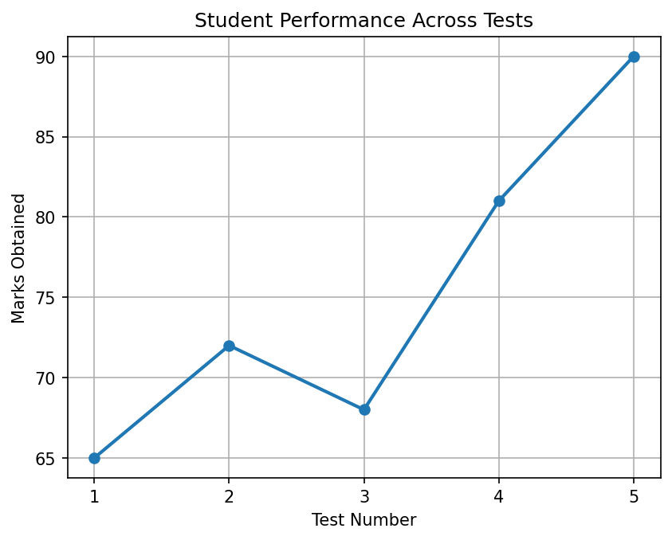
How the script works, step by step:
import matplotlib.pyplot as pltloads the plotting module under its usual short nameplt.testsholds the x-values andmarksholds the y-values. Each test number is paired with the mark in the same position.plt.plot()draws the line.marker='o'puts a dot on each test,linestyle='-'makes the line solid andlinewidth=2makes it thicker.plt.title(),plt.xlabel()andplt.ylabel()explain what the graph shows.plt.xticks(tests)makes the x-axis show only the whole numbers 1 to 5.plt.grid(True)adds gridlines so that the marks can be read more easily.plt.show()displays the finished graph.
The graph shows a dip at Test 3 (68) and then a steady rise to the best mark of 90 in Test 5.
Follow-up question: Without plt.xticks(tests), what might appear on the x-axis?
Show answer
Matplotlib chooses the tick positions itself and may show values such as 1.0, 1.5, 2.0, 2.5 and so on. There is no "Test 1.5", so setting the ticks to the actual test numbers makes the graph clearer.2. Create a graph using only Y-values. Explain how Matplotlib automatically generates X-values.¶
Answer
When plt.plot() receives only one list, it treats that list as the y-values. It then creates the x-values itself as 0, 1, 2, 3, and so on, one for each y-value. These are the same numbers that range(len(sales)) would give. Each y-value is paired with its position (index) in the list. In the book this is called Pattern 1 plotting.
# ==========================================================
# Y-ONLY PLOTTING
# ==========================================================
#
# Objective:
# Plot a graph by supplying only Y-values.
#
# Concepts Covered:
# 1. Pattern-1 plotting
# 2. Automatic X-value generation
# 3. Implicit indexing
#
# ==========================================================
# Step 1: Import pyplot
import matplotlib.pyplot as plt
# Step 2: Create Y-values
sales = [120, 135, 150, 170, 165, 190]
# Step 3: Plot only Y-values
# plot() returns a list of the lines it drew; the comma takes out the single line.
line, = plt.plot(
sales,
marker='o',
linewidth=2
)
# ----------------------------------------------------------
# Matplotlib automatically generates:
#
# X = [0,1,2,3,4,5]
#
# Resulting coordinate pairs become:
#
# (0,120)
# (1,135)
# (2,150)
# (3,170)
# (4,165)
# (5,190)
#
# ----------------------------------------------------------
# Check what Matplotlib really used
x_generated = [int(v) for v in line.get_xdata()]
print("Y-values supplied :", sales)
print("X-values generated:", x_generated)
print("Coordinate pairs :", list(zip(x_generated, sales)))
# Step 4: Add title
plt.title("Monthly Sales (Y-Only Plot)")
# Step 5: Label axes
plt.xlabel("Auto Generated Index")
plt.ylabel("Sales")
# Step 6: Add grid
plt.grid(True)
# Step 7: Show graph
plt.show()
Output
Y-values supplied : [120, 135, 150, 170, 165, 190]
X-values generated: [0, 1, 2, 3, 4, 5]
Coordinate pairs : [(0, 120), (1, 135), (2, 150), (3, 170), (4, 165), (5, 190)]
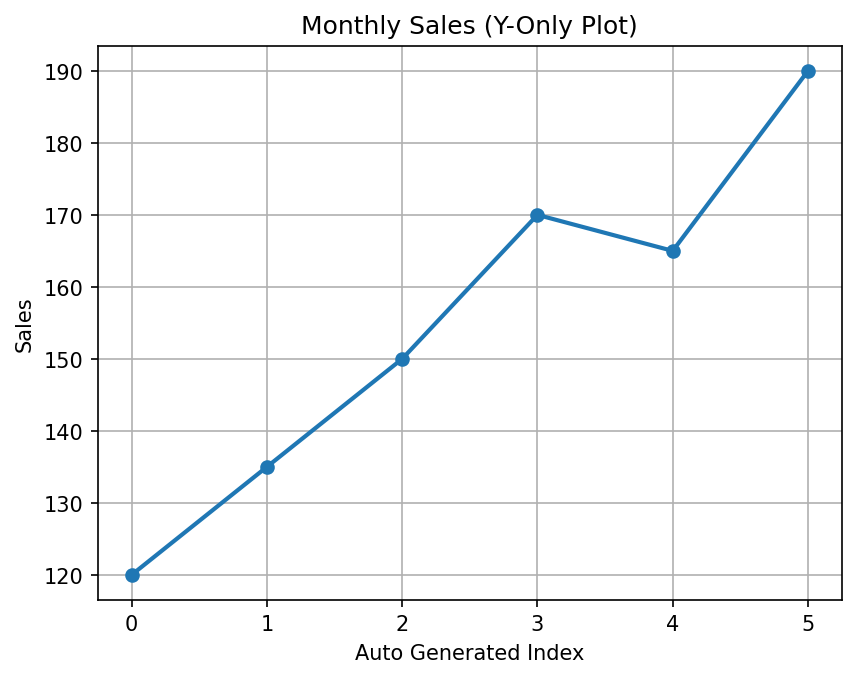
How the script works, step by step:
- Only one list,
sales, is created. There is no list of x-values. plt.plot(sales, ...)draws the line. Matplotlib generates the x-values 0 to 5 because the list has 6 items.line.get_xdata()reads back the x-values that were actually used, and the script prints them with the coordinate pairs. They match the list in the comment block.- The title, labels and grid are added as usual, and the graph is shown.
Follow-up question: The graph is titled "Monthly Sales", but the x-axis starts at 0. How would you make it show months 1 to 6 instead?
Show answer
Give the x-values yourself, so it is no longer a Y-only plot:months = [1, 2, 3, 4, 5, 6]
plt.plot(months, sales, marker='o', linewidth=2)
plt.xlabel("Month")
3. Write a script to plot the performance of three students on the same graph. Use different styles, markers, legend, title, and grid.¶
Answer
To draw several lines on one graph, call plt.plot() once for each line before calling plt.show(). Matplotlib gives each line a new color automatically. Different markers and line styles make the lines easy to tell apart, even when printed in black and white. The label given to each line is the text used by the legend.
| Student | Marker | Line style |
|---|---|---|
| Alice | 'o' circle |
'-' solid |
| Bob | 's' square |
'--' dashed |
| Charlie | '^' triangle |
':' dotted |
# ==========================================================
# MULTIPLE LINE PLOTS
# ==========================================================
#
# Objective:
# Plot marks of three students on one graph.
#
# Concepts Covered:
# 1. Multiple datasets
# 2. Legends
# 3. Markers
# 4. Different line styles
# 5. Comparative visualization
#
# ==========================================================
# Step 1: Import pyplot
import matplotlib.pyplot as plt
# Step 2: Create X-values
tests = [1, 2, 3, 4, 5]
# Step 3: Create datasets
alice = [65, 70, 75, 80, 90]
bob = [60, 68, 72, 78, 85]
charlie = [70, 72, 78, 84, 88]
# Print each student's average and total improvement from Test 1 to Test 5
for name, marks in [("Alice", alice), ("Bob", bob), ("Charlie", charlie)]:
print(f"{name:<8} average = {sum(marks) / len(marks):.1f}, "
f"improvement = {marks[-1] - marks[0]} marks")
# Step 4: Plot Student 1
plt.plot(
tests,
alice,
marker='o', # Circle markers
linestyle='-', # Solid line
label='Alice' # Name shown in the legend
)
# Step 5: Plot Student 2
plt.plot(
tests,
bob,
marker='s', # Square markers
linestyle='--', # Dashed line
label='Bob'
)
# Step 6: Plot Student 3
plt.plot(
tests,
charlie,
marker='^', # Triangle markers
linestyle=':', # Dotted line
label='Charlie'
)
# Step 7: Add chart elements
plt.title("Comparison of Student Performance")
plt.xlabel("Test Number")
plt.ylabel("Marks")
plt.xticks(tests) # Whole test numbers only
# Step 8: Display legend
plt.legend()
# Step 9: Display grid
plt.grid(True)
# Step 10: Show graph
plt.show()
Output
Alice average = 76.0, improvement = 25 marks
Bob average = 72.6, improvement = 25 marks
Charlie average = 78.4, improvement = 18 marks
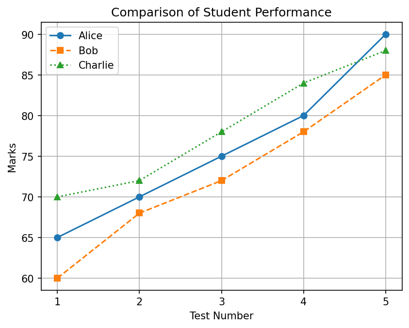
How the script works, step by step:
- All three students share the same x-values,
tests. - The loop before plotting prints each student's average and improvement, which helps in reading the graph.
- Three
plt.plot()calls draw three lines, each with its own marker, line style and label. plt.legend()collects the three labels and draws a key.- The title, labels, ticks and grid are added, and the graph is shown.
Reading the graph: Charlie leads for most of the tests, but Alice finishes highest in Test 5 (90). Alice and Bob both improved by 25 marks from the first test to the last.
Follow-up question: What happens if you call plt.legend() but forget to give the lines a label?
Show answer
Matplotlib finds no labelled lines, prints a warning ("No artists with labels found to put in legend") and draws no legend.Part 2: Plotting Different Data Structures¶
4. Write a script that plots the same dataset first using Python lists and then using NumPy arrays. Compare the approaches.¶
Answer
Matplotlib accepts both Python lists and NumPy arrays, and draws the same graph from either. The difference lies in what you can do with the data before plotting. A NumPy array supports vectorized maths, which means an operation such as * 2 is applied to every value at once. With a list, the same operation repeats the list instead, so a loop is needed. See NumPy: the absolute basics for beginners.
# ==========================================================
# LISTS VS NUMPY ARRAYS
# ==========================================================
#
# Objective:
# Plot identical data using:
# 1. Python lists
# 2. NumPy arrays
#
# Concepts Covered:
# 1. List-based plotting
# 2. NumPy-based plotting
# 3. Numerical computing
#
# ==========================================================
# Step 1: Import libraries
import matplotlib.pyplot as plt
import numpy as np
# ----------------------------------------------------------
# PART A : USING PYTHON LISTS
# ----------------------------------------------------------
# Step 2: Create list data
x_list = [1, 2, 3, 4, 5]
y_list = [10, 20, 30, 40, 50]
print("PART A - Python lists")
print(" Type of y_list:", type(y_list).__name__)
print(" y_list * 2 :", y_list * 2, " <- the list is repeated, not doubled")
print(" Doubling needs a loop:", [value * 2 for value in y_list])
# Step 3: Plot list data
plt.figure(figsize=(8,4))
plt.plot(
x_list,
y_list,
marker='o',
label='List Data'
)
plt.title("Plot Using Python Lists")
plt.xlabel("X")
plt.ylabel("Y")
plt.grid(True)
plt.legend()
plt.show()
# ----------------------------------------------------------
# PART B : USING NUMPY ARRAYS
# ----------------------------------------------------------
# Step 4: Create NumPy arrays
x_np = np.array([1, 2, 3, 4, 5])
y_np = np.array([10, 20, 30, 40, 50])
print()
print("PART B - NumPy arrays")
print(" Type of y_np :", type(y_np).__name__)
print(" y_np * 2 :", y_np * 2, " <- every value is doubled at once")
print(" Mean of y_np :", y_np.mean())
# Step 5: Plot NumPy arrays
plt.figure(figsize=(8,4))
plt.plot(
x_np,
y_np,
marker='s',
label='NumPy Array Data'
)
plt.title("Plot Using NumPy Arrays")
plt.xlabel("X")
plt.ylabel("Y")
plt.grid(True)
plt.legend()
plt.show()
# Step 6: Confirm that both versions hold the same values
print()
print("Same values in both versions?", np.array_equal(y_list, y_np))
# ----------------------------------------------------------
# COMPARISON
# ----------------------------------------------------------
#
# Lists
# -----
# Easy to create
# Good for small datasets
#
# NumPy Arrays
# ------------
# Faster numerical operations
# Efficient memory usage
# Better for scientific computing
#
# Both can be plotted directly by Matplotlib.
#
# ----------------------------------------------------------
Output
PART A - Python lists
Type of y_list: list
y_list * 2 : [10, 20, 30, 40, 50, 10, 20, 30, 40, 50] <- the list is repeated, not doubled
Doubling needs a loop: [20, 40, 60, 80, 100]
PART B - NumPy arrays
Type of y_np : ndarray
y_np * 2 : [ 20 40 60 80 100] <- every value is doubled at once
Mean of y_np : 30.0
Same values in both versions? True
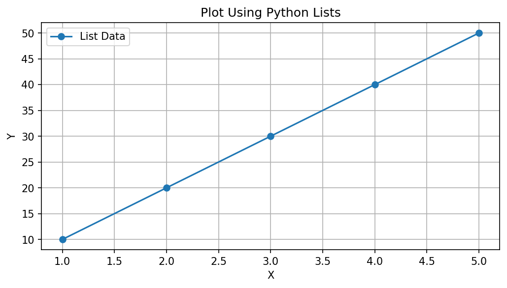
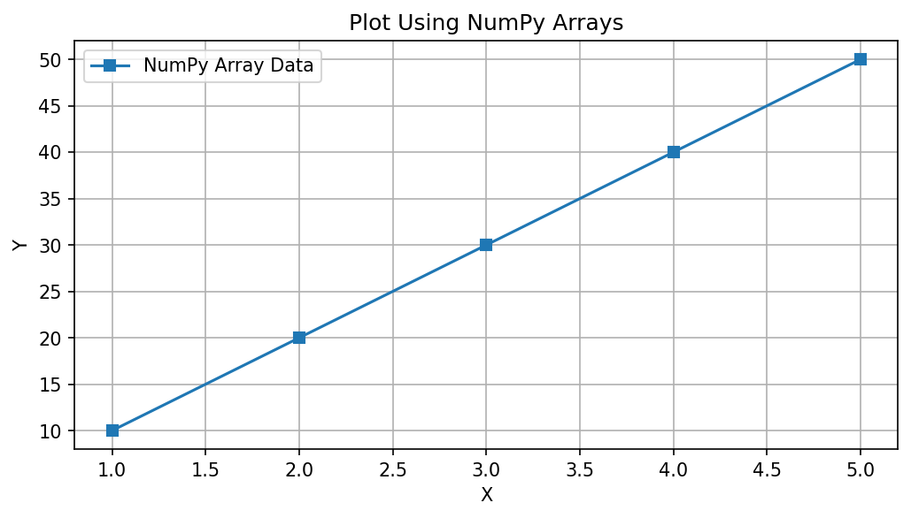
How the script works, step by step:
- Part A creates two lists, prints what
* 2does to a list, and plots them in a new figure. - Part B creates two NumPy arrays with the same values, prints what
* 2does to an array, and plots them in a second figure. np.array_equal()confirms that both versions hold exactly the same numbers.- The two graphs are identical apart from the marker shape and the title.
Comparison:
| Feature | Python list | NumPy array |
|---|---|---|
| How to create | [10, 20, 30] |
np.array([10, 20, 30]) |
| Needs an extra library | No | Yes, NumPy |
Effect of * 2 |
Repeats the list | Doubles every value |
| Maths on all values | Needs a loop | One step (vectorized) |
| Speed and memory for large data | Slower, more memory | Faster, less memory |
| Can be plotted by Matplotlib | Yes | Yes |
Follow-up question: How would you add 5 bonus marks to every value in y_list and in y_np?
Show answer
For the array: `y_np + 5`. For the list, a loop or list comprehension is needed: `[value + 5 for value in y_list]`. Writing `y_list + 5` raises a `TypeError`, because Python cannot add a number to a list.5. Write a script that plots identical data using a Python List, NumPy Array, and Pandas Series. Display all three in separate subplots and compare them.¶
Answer
plt.subplots(nrows=3, ncols=1) creates one figure with three plotting areas stacked vertically, and returns them in the array ax. Each dataset is drawn in its own area with ax[0].plot(), ax[1].plot() and ax[2].plot(). This is the object-oriented (OOP) style. All three plots look the same. The one difference is behind the scenes: for a pandas Series, Matplotlib uses the Series index (0, 1, 2, 3, 4) as the x-values, while for the list and the array it generates them. See pandas Series and matplotlib.pyplot.subplots.
# ==========================================================
# LISTS VS NUMPY VS PANDAS
# ==========================================================
#
# Objective:
# Plot identical data using:
#
# 1. Python List
# 2. NumPy Array
# 3. Pandas Series
#
# Concepts Covered:
# 1. Different data sources
# 2. Subplots
# 3. OOP-style plotting
# 4. Comparative visualization
#
# ==========================================================
# Step 1: Import required libraries
import matplotlib.pyplot as plt
import numpy as np
import pandas as pd
# Step 2: Create identical data
list_data = [10, 15, 20, 25, 30]
numpy_data = np.array([10, 15, 20, 25, 30])
pandas_data = pd.Series([10, 15, 20, 25, 30])
print("List :", list_data)
print("Array :", numpy_data)
print("Series:")
print(pandas_data) # A Series prints its index (0 to 4) beside the values
# Step 3: Create subplot structure
# sharex=True gives all three plots the same x-axis, so they line up.
fig, ax = plt.subplots(
nrows=3,
ncols=1,
figsize=(8, 10),
sharex=True
)
# ----------------------------------------------------------
# SUBPLOT 1
# ----------------------------------------------------------
ax[0].plot(
list_data,
marker='o'
)
ax[0].set_title("Python List")
ax[0].set_ylabel("Value")
ax[0].grid(True)
# ----------------------------------------------------------
# SUBPLOT 2
# ----------------------------------------------------------
ax[1].plot(
numpy_data,
marker='s'
)
ax[1].set_title("NumPy Array")
ax[1].set_ylabel("Value")
ax[1].grid(True)
# ----------------------------------------------------------
# SUBPLOT 3
# ----------------------------------------------------------
# For a Series, Matplotlib uses the Series index (0, 1, 2, 3, 4) as the x-values.
ax[2].plot(
pandas_data,
marker='^'
)
ax[2].set_title("Pandas Series")
ax[2].set_xlabel("Position (index)")
ax[2].set_ylabel("Value")
ax[2].grid(True)
# Check that the three lines have exactly the same points
for axes, name in zip(ax, ["List", "Array", "Series"]):
line = axes.lines[0]
print(f"{name:<6} plotted x = {line.get_xdata().tolist()}, y = {line.get_ydata().tolist()}")
# Step 4: Improve spacing
plt.tight_layout()
# Step 5: Display graph
plt.show()
# ----------------------------------------------------------
# COMPARISON TABLE
# ----------------------------------------------------------
#
# +--------------+---------------------------+
# | Structure | Primary Use |
# +--------------+---------------------------+
# | List | General Python data |
# | NumPy Array | Numerical computation |
# | Pandas Series| Data analysis |
# +--------------+---------------------------+
#
# Matplotlib can directly plot all three.
#
# ----------------------------------------------------------
Output
List : [10, 15, 20, 25, 30]
Array : [10 15 20 25 30]
Series:
0 10
1 15
2 20
3 25
4 30
dtype: int64
List plotted x = [0.0, 1.0, 2.0, 3.0, 4.0], y = [10, 15, 20, 25, 30]
Array plotted x = [0.0, 1.0, 2.0, 3.0, 4.0], y = [10, 15, 20, 25, 30]
Series plotted x = [0, 1, 2, 3, 4], y = [10, 15, 20, 25, 30]
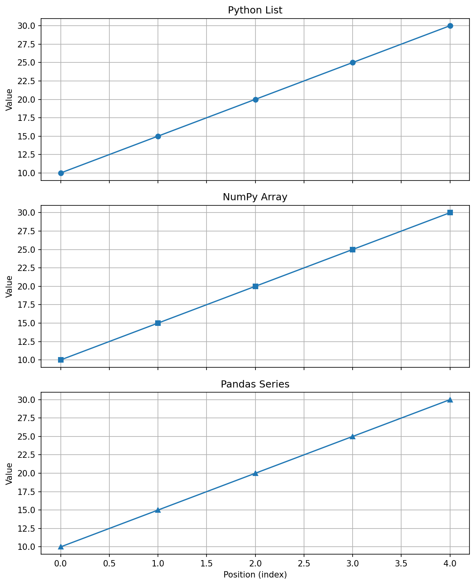
How the script works, step by step:
- The same five numbers are stored as a list, an array and a Series. Printing the Series shows its index on the left.
plt.subplots(nrows=3, ncols=1, sharex=True)creates three stacked plotting areas that share one x-axis.- Each dataset is plotted in its own area, with a title, a y-axis label and a grid.
- The loop reads back the points of each line. All three have the same x- and y-values. The x-values generated for the list and array are stored as decimals (0.0, 1.0, ...), while the Series index gives whole numbers, but the positions are identical.
plt.tight_layout()adjusts spacing, andplt.show()displays the figure.
Comparison:
| Structure | Primary use | x-values when only the data is given |
|---|---|---|
| List | General Python data | Generated: 0, 1, 2, ... |
| NumPy array | Numerical computation | Generated: 0, 1, 2, ... |
| pandas Series | Data analysis with labels | Taken from the Series index |
How data reaches the finished graph:
flowchart TD
A[1 - Choose the input data]
A --> B[2a - Python list]
A --> C[2b - NumPy array]
A --> D[2c - pandas Series]
B --> E[3 - ax.plot draws the line]
C --> E
D --> E
E --> F[4 - Add title]
F --> G[5 - Add axis labels]
G --> H[6 - Add grid]
H --> I[7 - Final figure with three subplots]
Follow-up question: If the Series were created as pd.Series([10, 15, 20, 25, 30], index=[2020, 2021, 2022, 2023, 2024]), what would the third subplot show on its x-axis?
Show answer
The years 2020 to 2024, because Matplotlib uses the Series index as the x-values. The first two subplots would still show 0 to 4, so they would no longer line up with the third one.Part 3: Customizing Line Plots¶
6. Customise line appearance: Plot monthly sales and demonstrate different line styles, colours, markers, marker sizes, line widths, and transparency.¶
Answer
plt.plot() accepts many keyword arguments that control how a line looks. The script uses the most common ones together. It prints the settings back from the line object to confirm that Matplotlib applied them.
| Keyword argument | What it controls | Value used | Other examples |
|---|---|---|---|
color |
Color of the line | "blue" |
"green", "#FF5733" |
linestyle |
Pattern of the line | "--" (dashed) |
"-", ":", "-." |
linewidth |
Thickness in points | 3 |
1, 5 |
marker |
Shape at each data point | "o" (circle) |
"s", "^", "D" |
markersize |
Size of the marker in points | 10 |
5, 15 |
markerfacecolor |
Fill color of the marker | "red" |
"white" |
markeredgecolor |
Outline color of the marker | "black" |
"blue" |
alpha |
Transparency, from 0 (invisible) to 1 (solid) | 0.8 |
0.3, 1.0 |
See the full list under "Other Parameters" in matplotlib.pyplot.plot. A point is a printing unit equal to 1/72 of an inch.
# ==========================================================
# CUSTOMIZING LINE APPEARANCE
# ==========================================================
#
# Objective:
# Demonstrate various line customization options.
#
# Concepts Covered:
# 1. color
# 2. linestyle
# 3. linewidth
# 4. marker
# 5. markersize
# 6. alpha (transparency)
#
# ==========================================================
# Step 1: Import Matplotlib
import matplotlib.pyplot as plt
# Step 2: Prepare data
months = ["Jan", "Feb", "Mar", "Apr", "May", "Jun"]
sales = [120, 150, 140, 180, 210, 250]
# Step 3: Create customized line graph
line, = plt.plot(
months,
sales,
color="blue", # Line color
linestyle="--", # Dashed line
linewidth=3, # Thickness of the line, in points
marker="o", # Marker shape (circle)
markersize=10, # Marker size, in points
markerfacecolor="red", # Fill color inside each marker
markeredgecolor="black", # Outline color of each marker
alpha=0.8 # Transparency: 1 = solid, 0 = invisible
)
# Print the settings Matplotlib actually applied
print("color :", line.get_color())
print("linestyle :", line.get_linestyle())
print("linewidth :", line.get_linewidth())
print("marker :", line.get_marker())
print("markersize :", line.get_markersize())
print("markerfacecolor:", line.get_markerfacecolor())
print("markeredgecolor:", line.get_markeredgecolor())
print("alpha :", line.get_alpha())
# Step 4: Add chart elements
plt.title("Monthly Sales Trend")
plt.xlabel("Month")
plt.ylabel("Sales")
plt.grid(True)
# Step 5: Display graph
plt.show()
Output
color : blue
linestyle : --
linewidth : 3.0
marker : o
markersize : 10.0
markerfacecolor: red
markeredgecolor: black
alpha : 0.8
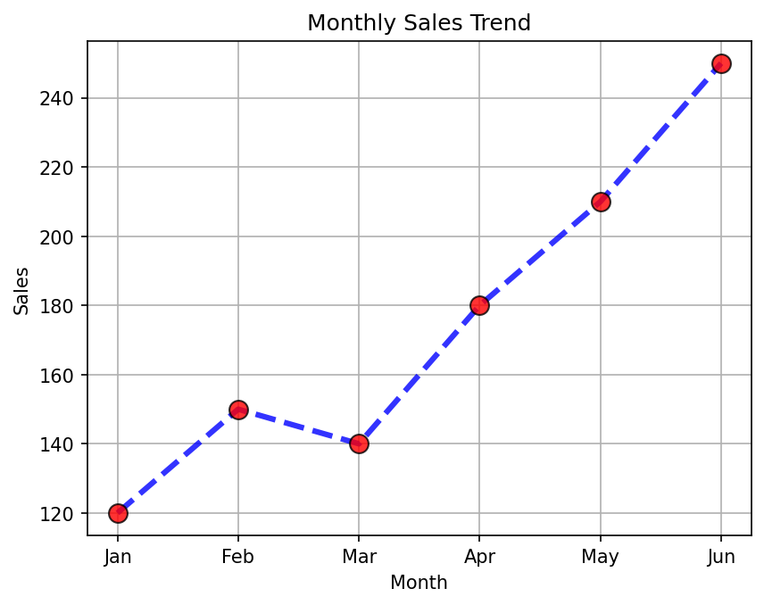
How the script works, step by step:
- The month names are text, so Matplotlib places them along the x-axis in the order given.
- One
plt.plot()call sets all the appearance options at once. - The
get_...()methods read the settings back from the line and print them. alpha=0.8makes both the line and the markers slightly see-through.- The title, labels and grid are added, and the graph is shown.
Follow-up question: Change the script so that the markers are white squares with a blue outline on a solid green line. Which values change?
Show answer
`color="green"`, `linestyle="-"`, `marker="s"`, `markerfacecolor="white"` and `markeredgecolor="blue"`.7. Create a graph showing marks of three students. Add title, axis labels, legend, and explain the role of each chart element.¶
Answer
Chart elements are the parts of a graph that explain the data to the reader. Without them, a graph is just a set of lines. The script draws three lines, adds each element, and then prints the elements back to confirm they are in place.
| Element | Function | Role | Question it answers for the reader |
|---|---|---|---|
| Title | plt.title() |
Gives context to the graph | What is this graph about? |
| X-axis label | plt.xlabel() |
Describes the x-axis values | What runs left to right? |
| Y-axis label | plt.ylabel() |
Describes the y-axis values | What runs bottom to top, and in what unit? |
| Legend | plt.legend() |
Identifies multiple datasets | Which line belongs to which student? |
| Grid | plt.grid() |
Helps read values | Roughly what value is this point? |
# ==========================================================
# TITLES, LABELS AND LEGENDS
# ==========================================================
#
# Objective:
# Demonstrate chart elements.
#
# Concepts Covered:
# 1. title()
# 2. xlabel()
# 3. ylabel()
# 4. legend()
#
# ==========================================================
# Step 1: Import library
import matplotlib.pyplot as plt
# Step 2: Create data
tests = [1, 2, 3, 4, 5]
alice = [60, 70, 75, 82, 88]
bob = [58, 68, 72, 76, 80]
charlie = [65, 74, 79, 85, 92]
# Step 3: Plot multiple datasets
plt.plot(tests, alice, marker="o", label="Alice")
plt.plot(tests, bob, marker="s", label="Bob")
plt.plot(tests, charlie, marker="^", label="Charlie")
# Step 4: Add title
plt.title("Performance Comparison")
# Step 5: Add axis labels
plt.xlabel("Test Number")
plt.ylabel("Marks Obtained")
plt.xticks(tests)
# Step 6: Add legend
legend = plt.legend()
# Step 7: Add grid
plt.grid(True)
# Print every chart element that was added
ax = plt.gca() # gca() = "get current axes"
print("Title :", ax.get_title())
print("X-axis label :", ax.get_xlabel())
print("Y-axis label :", ax.get_ylabel())
print("Legend items :", [text.get_text() for text in legend.get_texts()])
# Step 8: Display graph
plt.show()
# ------------------------------------------------
# EXPLANATION
# ------------------------------------------------
#
# title() -> Gives context to the graph.
#
# xlabel() -> Describes X-axis values.
#
# ylabel() -> Describes Y-axis values.
#
# legend() -> Identifies multiple datasets.
#
# ------------------------------------------------
Output
Title : Performance Comparison
X-axis label : Test Number
Y-axis label : Marks Obtained
Legend items : ['Alice', 'Bob', 'Charlie']
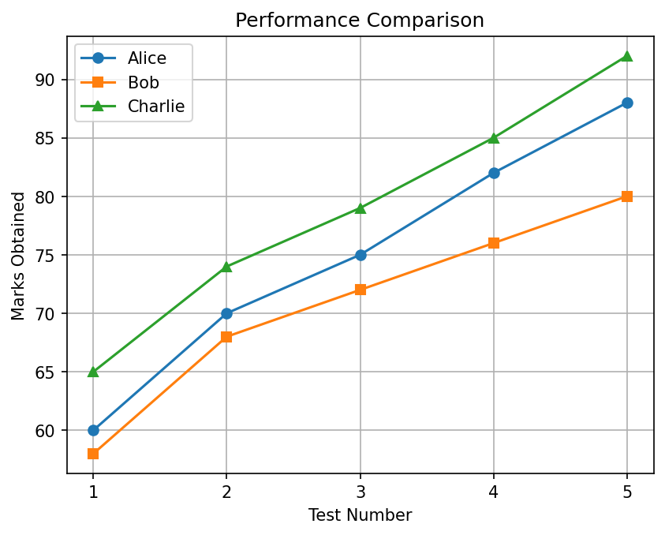
How the script works, step by step:
- Three lines are plotted, each with a marker and a
label. - The title and axis labels are added.
plt.legend()builds the key from the three labels. Its return value is stored inlegend.plt.gca()returns the current plotting area, from which the title and labels are read back. The legend's text entries are read fromlegend.- The printed output confirms that every element has been added, and the graph is shown.
Follow-up question: Charlie's line and Alice's line are close together. Which chart element helps the reader tell them apart, and what else in the script helps?
Show answer
The legend links each color and marker to a name. The different markers (circle, square, triangle) also help, especially if the graph is printed in black and white.8. Plot daily temperatures for ten days. Add gridlines and experiment with axis limits using xlim() and ylim().¶
Answer
By default, Matplotlib sets the axis limits to fit the data with a small margin. plt.xlim(left, right) and plt.ylim(bottom, top) let you choose the limits yourself. Called with no arguments, they simply return the current limits, which is useful for checking. See matplotlib.pyplot.xlim and matplotlib.pyplot.ylim.
# ==========================================================
# GRIDLINES AND AXIS LIMITS
# ==========================================================
#
# Objective:
# Demonstrate:
# 1. Gridlines
# 2. X-axis limits
# 3. Y-axis limits
#
# ==========================================================
# Step 1: Import pyplot
import matplotlib.pyplot as plt
# Step 2: Create data
days = [1,2,3,4,5,6,7,8,9,10]
temperature = [32,34,33,35,36,37,35,34,33,32]
# Step 3: Plot graph
plt.plot(
days,
temperature,
marker="o"
)
# Step 4: Add chart elements
plt.title("Daily Temperature")
plt.xlabel("Day")
plt.ylabel("Temperature (°C)")
plt.xticks(days)
# Step 5: Add gridlines
plt.grid(True)
# See the limits Matplotlib chose by itself
# plt.xlim() and plt.ylim() called with no values simply return the current limits.
x_auto = plt.xlim()
y_auto = plt.ylim()
print("Automatic x-limits:", tuple(round(float(v), 2) for v in x_auto))
print("Automatic y-limits:", tuple(round(float(v), 2) for v in y_auto))
# ------------------------------------------------
# Axis Limits
# ------------------------------------------------
# Display only selected X range
# 0.5 and 10.5 leave half a day of space at each end,
# so the markers on Day 1 and Day 10 are not cut in half.
plt.xlim(0.5, 10.5)
# Display only selected Y range
# Starting at 30 instead of about 31.75 gives some space below the lowest reading.
plt.ylim(30, 40)
print("New x-limits :", tuple(float(v) for v in plt.xlim()))
print("New y-limits :", tuple(float(v) for v in plt.ylim()))
# ------------------------------------------------
# Step 6: Display graph
plt.show()
Output
Automatic x-limits: (0.55, 10.45)
Automatic y-limits: (31.75, 37.25)
New x-limits : (0.5, 10.5)
New y-limits : (30.0, 40.0)
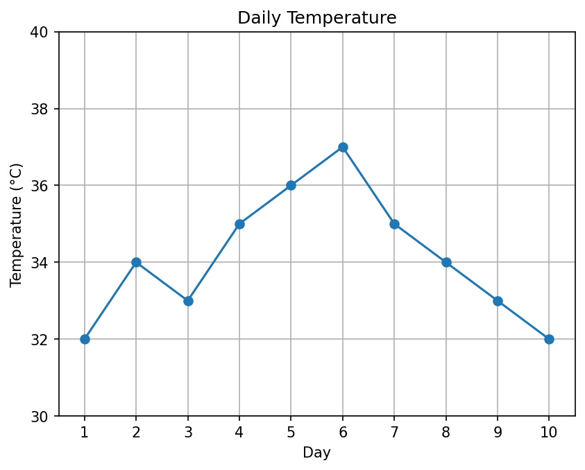
How the script works, step by step:
- The temperatures are plotted with markers, labels, whole-day ticks and a grid.
plt.xlim()andplt.ylim()with no values print the limits Matplotlib chose: about 0.55 to 10.45 for x and 31.75 to 37.25 for y.plt.xlim(0.5, 10.5)sets the x-range. Half a day of space is left at each end so that the markers on Day 1 and Day 10 are not cut in half. With limits of exactly 1 and 10, half of each end marker would lie outside the plot.plt.ylim(30, 40)sets the y-range. It adds space above and below the data, which makes the ups and downs look gentler than with the automatic limits.- The new limits are printed and the graph is shown.
Experiments to try:
| Setting | Effect on the graph |
|---|---|
No xlim() or ylim() |
Matplotlib fits the data tightly with a small margin |
plt.ylim(30, 40) |
More space above and below; changes look smaller |
plt.ylim(0, 40) |
Starts at zero; the temperature line looks almost flat |
plt.ylim(31, 38) |
Close to the data; changes look larger |
plt.xlim(1, 5) |
Shows only Days 1 to 5; the rest is cut off |
Follow-up question: Why can changing the y-axis limits make the same data look dramatic or dull?
Show answer
The height of the plot always stays the same. A narrow y-range spreads a small change over the whole height, so a rise of 5 °C looks steep. A wide range squeezes the same change into a small part of the height, so it looks almost flat. Always check the axis numbers before judging how large a change is.Part 4: Combining Charts and the Object-Oriented Style¶
9. Create a combined Bar Chart and Line Chart showing monthly sales and monthly profit in the same figure.¶
Answer
A combined chart uses bars for one variable and a line for another. The bars show sales month by month and the line shows how profit moves.
Sales (120 to 260) are much larger than profit (15 to 45). If both are drawn on the same y-axis, the profit line is squashed near the bottom of the chart and its changes are hard to see. So the script draws the profit line on a second y-axis created with twinx(). The two charts share the same months along the bottom, but each has its own scale: sales on the left and profit on the right. See matplotlib.axes.Axes.twinx.
flowchart TD
A[Step 1 - Create figure and axes for sales] --> B[Step 2 - Draw sales as bars]
B --> C[Step 3 - Create a twin axes with twinx]
C --> D[Step 4 - Draw profit as a line on the twin axes]
D --> E[Step 5 - Label both y-axes]
E --> F[Step 6 - Join the legends of both axes]
F --> G[Step 7 - Add grid and show]
# ==========================================================
# COMBINED BAR + LINE CHART
# ==========================================================
#
# Objective:
# Show two related datasets
# using different chart types.
#
# Concepts Covered:
# 1. bar()
# 2. plot()
# 3. Mixed visualization
# 4. A second y-axis with twinx()
#
# ==========================================================
# Step 1: Import pyplot
import matplotlib.pyplot as plt
# Step 2: Create data
months = ["Jan","Feb","Mar","Apr","May","Jun"]
sales = [120,150,180,200,240,260]
profit = [15,20,28,30,40,45]
print("Sales range :", min(sales), "to", max(sales))
print("Profit range:", min(profit), "to", max(profit))
for m, s, p in zip(months, sales, profit):
print(f"{m}: profit is {p / s * 100:.1f}% of sales")
# Step 3: Create the figure and the main axes
fig, ax_sales = plt.subplots(figsize=(8, 5))
# Step 4: Create bar chart (sales, on the left y-axis)
ax_sales.bar(
months,
sales,
color="lightsteelblue",
label="Sales"
)
ax_sales.set_ylabel("Sales")
# Step 5: Create line chart (profit, on a second y-axis on the right)
# Profit values are much smaller than sales values. On the same axis the
# profit line would be squashed near the bottom. twinx() gives profit its own scale.
ax_profit = ax_sales.twinx()
ax_profit.plot(
months,
profit,
color="darkorange",
marker="o",
linewidth=3,
label="Profit"
)
ax_profit.set_ylabel("Profit")
ax_profit.set_ylim(0, 50) # Start at zero so the line is not exaggerated
# Step 6: Add chart elements
ax_sales.set_title("Sales and Profit Analysis")
ax_sales.set_xlabel("Month")
# Step 7: Add one legend for both charts
# Each axes keeps its own labels, so we collect them from both and join them.
bars_handles, bars_labels = ax_sales.get_legend_handles_labels()
line_handles, line_labels = ax_profit.get_legend_handles_labels()
ax_sales.legend(bars_handles + line_handles, bars_labels + line_labels, loc="upper left")
# Step 8: Add grid (behind the bars)
ax_sales.set_axisbelow(True)
ax_sales.grid(True, axis="y", alpha=0.4)
# Step 9: Show graph
plt.tight_layout()
plt.show()
Output
Sales range : 120 to 260
Profit range: 15 to 45
Jan: profit is 12.5% of sales
Feb: profit is 13.3% of sales
Mar: profit is 15.6% of sales
Apr: profit is 15.0% of sales
May: profit is 16.7% of sales
Jun: profit is 17.3% of sales
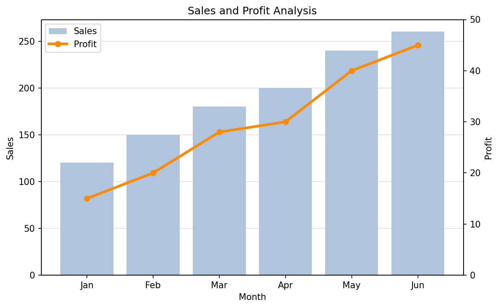
How the script works, step by step:
- The printed ranges show why one axis is not enough: sales go up to 260 but profit only up to 45. The profit margin is also printed for each month.
plt.subplots()creates the figure and the sales axes.ax_sales.bar()draws the bars.ax_sales.twinx()creates a second axes on top of the first, sharing its x-axis.ax_profit.plot()draws the profit line on it.- Each axes gets its own y-label.
ax_profit.set_ylim(0, 50)starts the profit scale at zero so that the rise is not exaggerated. - Each axes keeps its own legend entries, so the handles and labels of both are collected and joined into one legend.
set_axisbelow(True)draws the grid behind the bars.tight_layout()makes room for both y-labels, and the chart is shown.
Reading the chart: sales and profit both rise every month. Sales grow from 120 to 260, and profit from 15 to 45. The printed margins show that profit grows faster than sales: it is 12.5% of sales in January and 17.3% in June, with only a small dip in April.
A note on dual-axis charts: because the two y-axes have different scales, the point where the line crosses a bar has no meaning. Always label both axes clearly.
Follow-up question: What would the chart look like if profit were plotted with plt.plot() on the same axes as the sales bars?
Show answer
The y-axis would run from 0 to about 270 to fit the sales bars. The profit line, with values from 15 to 45, would lie along the bottom of the chart, inside the bars, and its steady rise would be hard to see. That is why a second y-axis is used.10. Recreate a multi-line chart using the Object-Oriented (fig, ax) approach instead of the state-based pyplot approach.¶
Answer
In the state-based (pyplot) approach, functions such as plt.plot() and plt.title() act on the "current" plot, which Matplotlib keeps track of for you. In the object-oriented approach, you create the figure and the plotting area yourself with fig, ax = plt.subplots(), and then call methods on ax. You always know which plot you are changing, which matters in larger scripts and figures with several plots. See Matplotlib Application Interfaces.
| Task | State-based | Object-oriented |
|---|---|---|
| Create the plot area | Automatic | fig, ax = plt.subplots() |
| Draw a line | plt.plot(...) |
ax.plot(...) |
| Title | plt.title(...) |
ax.set_title(...) |
| Axis labels | plt.xlabel(...), plt.ylabel(...) |
ax.set_xlabel(...), ax.set_ylabel(...) |
| Ticks | plt.xticks(...) |
ax.set_xticks(...) |
| Grid and legend | plt.grid(), plt.legend() |
ax.grid(), ax.legend() |
# ==========================================================
# OBJECT ORIENTED PLOTTING
# ==========================================================
#
# Objective:
# Create graph using:
#
# fig
# ax
#
# instead of directly using plt.plot()
#
# Concepts Covered:
#
# 1. Figure object
# 2. Axes object
# 3. OOP plotting style
# 4. Professional plotting
#
# ==========================================================
# Step 1: Import library
import matplotlib.pyplot as plt
# Step 2: Create data
tests = [1,2,3,4,5]
alice = [65,72,78,82,90]
bob = [60,68,74,79,84]
charlie = [70,75,80,86,92]
# ------------------------------------------------
# Step 3:
# Create Figure and Axes objects
# ------------------------------------------------
fig, ax = plt.subplots(
figsize=(8,5)
)
print("fig is a", type(fig).__name__, "object")
print("ax is an", type(ax).__name__, "object")
# ------------------------------------------------
# Step 4:
# Plot using Axes methods
# ------------------------------------------------
ax.plot(
tests,
alice,
marker="o",
label="Alice"
)
ax.plot(
tests,
bob,
marker="s",
label="Bob"
)
ax.plot(
tests,
charlie,
marker="^",
label="Charlie"
)
# ------------------------------------------------
# Step 5:
# Customize Axes
# ------------------------------------------------
ax.set_title(
"Student Performance Comparison"
)
ax.set_xlabel(
"Test Number"
)
ax.set_ylabel(
"Marks"
)
ax.set_xticks(tests)
ax.grid(True)
ax.legend()
print("Lines drawn on ax:", len(ax.lines))
print("Title of ax :", ax.get_title())
# ------------------------------------------------
# Step 6:
# Display graph
# ------------------------------------------------
plt.show()
# =================================================
# OOP STRUCTURE
# =================================================
#
# Figure
# |
# +---- Axes
# |
# +---- plot()
# +---- set_title()
# +---- set_xlabel()
# +---- set_ylabel()
# +---- legend()
# +---- grid()
#
# =================================================
Output
fig is a Figure object
ax is an Axes object
Lines drawn on ax: 3
Title of ax : Student Performance Comparison
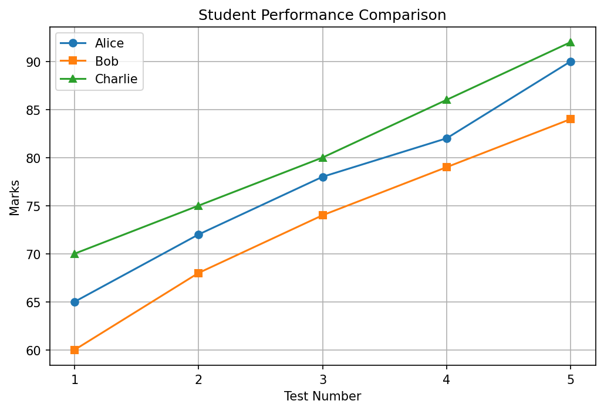
How the script works, step by step:
plt.subplots(figsize=(8,5))returns two objects:fig, the whole figure (8 inches by 5 inches), andax, the plotting area inside it.- Three
ax.plot()calls draw the three lines onax. - The
ax.set_...()methods add the title, labels and ticks;ax.grid()andax.legend()add the grid and legend. - The printed output confirms the types of
figandax, that three lines were drawn and the title that was set. plt.show()displays the figure.
Follow-up question: How would you change this script to show each student in a separate plot placed side by side?
Show answer
Create three plotting areas and draw one line in each:fig, ax = plt.subplots(1, 3, figsize=(12, 4), sharey=True)
ax[0].plot(tests, alice, marker="o")
ax[0].set_title("Alice")
ax[1].plot(tests, bob, marker="s")
ax[1].set_title("Bob")
ax[2].plot(tests, charlie, marker="^")
ax[2].set_title("Charlie")
plt.show()
Part 5: Other Chart Types¶
11. Create a bar chart project showing the number of books issued by different departments in a college library. Add data labels, title, labels, legend, and gridlines.¶
Answer
A bar chart compares amounts across separate categories, here the college departments. Data labels are numbers written on or above each bar so that the reader does not have to estimate the value from the axis. plt.bar() returns a container of bar objects. Looping over it gives the position and height of each bar, which tells us where to place its label. See matplotlib.pyplot.bar.
flowchart TD
A[Step 1 - Prepare department names and book counts] --> B[Step 2 - Draw the bars and keep them in a variable]
B --> C[Step 3 - Take the next bar]
C --> D[Step 4 - Find its centre and its height]
D --> E[Step 5 - Write the height just above the bar]
E --> F{Step 6 - Any bars left}
F -->|Yes| C
F -->|No| G[Step 7 - Add title, labels, grid and legend, then show]
# ==========================================================
# BAR CHART PROJECT
# ==========================================================
#
# Objective:
# Visualize the number of books issued by
# different departments.
#
# Concepts Covered:
# 1. Bar charts
# 2. Data labels
# 3. Titles and labels
# 4. Gridlines
# 5. Iterating over bars
#
# ==========================================================
# Step 1: Import Matplotlib
import matplotlib.pyplot as plt
# Step 2: Create data
departments = [
"Computer",
"Mechanical",
"Civil",
"Electrical",
"Management"
]
books_issued = [450, 320, 280, 260, 390]
total = sum(books_issued)
print("Total books issued:", total)
for dept, books in zip(departments, books_issued):
print(f" {dept:<11} {books:>4} books ({books / total * 100:.1f}% of total)")
# Step 3: Create figure
plt.figure(figsize=(10,5))
# Step 4: Create bars
# plt.bar() returns a container holding one Rectangle object per bar.
bars = plt.bar(
departments,
books_issued,
label="Books Issued"
)
# Step 5: Add data labels
# For each bar:
# bar.get_x() -> left edge of the bar
# bar.get_width() -> width of the bar, so get_x() + width/2 is its centre
# bar.get_height() -> height of the bar, which is the number of books
for bar in bars:
height = bar.get_height()
plt.text(
bar.get_x() + bar.get_width()/2, # x: centre of the bar
height + 5, # y: a little above the top of the bar
str(int(height)), # text: the value
ha='center' # centre the text horizontally
)
# Step 6: Add chart elements
plt.title("Books Issued by Department")
plt.xlabel("Department")
plt.ylabel("Number of Books")
plt.ylim(0, max(books_issued) * 1.15) # Extra space at the top for the labels
plt.gca().set_axisbelow(True) # Draw the grid behind the bars
plt.grid(axis='y')
plt.legend()
# Step 7: Display graph
plt.show()
Output
Total books issued: 1700
Computer 450 books (26.5% of total)
Mechanical 320 books (18.8% of total)
Civil 280 books (16.5% of total)
Electrical 260 books (15.3% of total)
Management 390 books (22.9% of total)
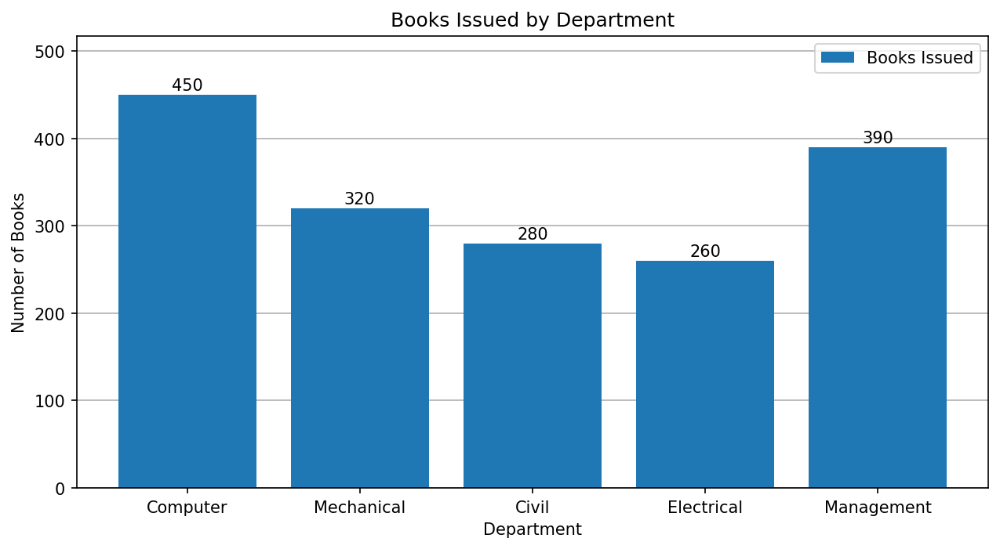
How the script works, step by step:
- The totals and percentages are printed first. The Computer department issued the most books (450, or 26.5% of the total).
plt.figure(figsize=(10,5))makes a wide figure so the department names fit.plt.bar()draws the bars and stores them inbars.- The loop places a label at the centre of each bar (
get_x() + get_width()/2), 5 units above its top. plt.ylim(0, max(books_issued) * 1.15)leaves space above the tallest bar so its label is not cut off.set_axisbelow(True)puts the grid behind the bars, andplt.grid(axis='y')draws horizontal gridlines only.- The legend shows the label "Books Issued", and the graph is shown.
A shortcut: Matplotlib version 3.4 and later has plt.bar_label(bars), which adds the same data labels in one line. The loop is shown here because it teaches how bar positions work. See matplotlib.pyplot.bar_label.
Follow-up question: How would you sort the bars from the most books to the fewest?
Show answer
Sort the two lists together before plotting:pairs = sorted(zip(books_issued, departments), reverse=True)
books_issued = [books for books, dept in pairs]
departments = [dept for books, dept in pairs]
12. Create a pie chart showing a family's monthly expenses. Use explode to highlight the largest expense category.¶
Answer
A pie chart shows how a whole is divided into parts. Each slice's angle is proportional to its share of the total. The explode option takes one number per slice, telling Matplotlib how far to pull that slice away from the centre, as a fraction of the radius. 0.1 pulls a slice out by 10% of the radius, and 0 leaves it in place. See matplotlib.pyplot.pie.
The question asks to highlight the largest expense. Instead of assuming it is the first item, the script finds it with max() and index(), so the correct slice is still highlighted if the numbers change.
# ==========================================================
# PIE CHART WITH EXPLODE
# ==========================================================
#
# Objective:
# Highlight one slice using explode.
#
# Concepts Covered:
# 1. Pie chart
# 2. explode
# 3. percentages
# 4. labels
#
# ==========================================================
# Step 1: Import library
import matplotlib.pyplot as plt
# Step 2: Create data
categories = [
"Rent",
"Food",
"Transport",
"Education",
"Entertainment"
]
expenses = [25000, 12000, 5000, 7000, 3000]
total = sum(expenses)
print("Total monthly expenses:", total)
for name, amount in zip(categories, expenses):
print(f" {name:<13} {amount:>6} {amount / total * 100:5.1f}%")
# Step 3: Create explode tuple
# Instead of typing the position by hand, find the largest expense
# and move only that slice outward by 0.1 (10% of the radius).
largest_index = expenses.index(max(expenses))
explode = tuple(
0.1 if i == largest_index else 0
for i in range(len(expenses))
)
print("Largest expense:", categories[largest_index])
print("Explode values :", explode)
# Step 4: Create pie chart
plt.pie(
expenses,
labels=categories,
autopct='%1.1f%%', # Write each percentage with 1 decimal place
explode=explode, # Pull out the largest slice
shadow=True, # Add a light shadow
startangle=90 # Start the first slice at the top
)
# Step 5: Add title
plt.title("Monthly Family Expenses")
# Step 6: Display chart
plt.show()
Output
Total monthly expenses: 52000
Rent 25000 48.1%
Food 12000 23.1%
Transport 5000 9.6%
Education 7000 13.5%
Entertainment 3000 5.8%
Largest expense: Rent
Explode values : (0.1, 0, 0, 0, 0)
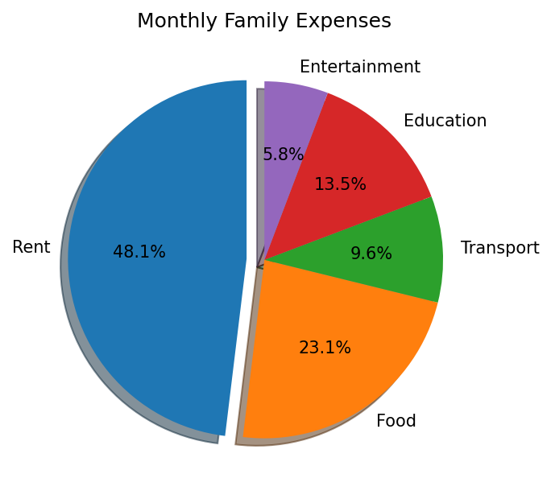
How the script works, step by step:
- The total (52,000) and each category's share are printed. Rent is 48.1% of the total.
expenses.index(max(expenses))finds the position of the largest expense, which is 0 (Rent).- The
explodetuple is built with 0.1 at that position and 0 everywhere else. plt.pie()draws the chart.autopct='%1.1f%%'writes each percentage with one decimal place;%%prints a single percent sign.shadow=Trueadds a shadow, andstartangle=90starts the first slice at the top.- The title is added and the chart is shown.
When to use a pie chart: only when the parts add up to a meaningful whole, and there are just a few categories (about five or fewer). With many small slices, a bar chart is easier to read.
Follow-up question: What happens to the pie chart if the rent is raised to 30,000?
Show answer
The total becomes 57,000, so every percentage changes. Rent's share rises to 52.6% and its slice grows to more than half the pie. Rent is still the largest, so it is still the exploded slice. If another category became the largest, the script would highlight that one instead, because it finds the largest value each time.13. Create a histogram showing examination marks of 100 students. Use custom bins and explain how bins affect the distribution.¶
Answer
A histogram shows how values are spread out. It divides the range of marks into intervals called bins and counts how many students fall into each one. Instead of a number of bins, you can pass a list of bin edges, such as [30, 40, 50, ..., 100], to choose exactly where each bin starts and ends. See matplotlib.pyplot.hist.
The marks are made with np.random.normal(), which produces bell-shaped random numbers around an average. A seed makes the "random" numbers the same every time. See numpy.random.normal.
To show how bins affect the picture, the script draws the same marks twice: once with the custom 10-mark bins and once with narrower 5-mark bins.
# ==========================================================
# HISTOGRAM WITH CUSTOM BINS
# ==========================================================
#
# Objective:
# Study distribution of marks.
#
# Concepts Covered:
# 1. Histogram
# 2. Frequency distribution
# 3. Custom bins
# 4. Effect of bin width
#
# ==========================================================
# Step 1: Import libraries
import matplotlib.pyplot as plt
import numpy as np
# Step 2: Generate sample marks
# 100 marks from a bell-shaped (normal) distribution:
# average 70, standard deviation 10. The seed makes the numbers repeatable.
np.random.seed(10)
marks = np.random.normal(
loc=70,
scale=10,
size=100
)
print(f"Lowest mark: {marks.min():.1f}, highest mark: {marks.max():.1f}")
# Step 3: Create custom bins
# Values outside the first and last edges are NOT counted, so check for them.
custom_bins = [
30,40,50,60,70,80,90,100
]
outside = np.sum((marks < custom_bins[0]) | (marks > custom_bins[-1]))
print("Marks outside the bins (not counted):", outside)
# Step 4: Create two histograms side by side to compare bin widths
fig, ax = plt.subplots(1, 2, figsize=(11, 4), sharey=False)
counts, edges, _ = ax[0].hist(
marks,
bins=custom_bins,
edgecolor='black'
)
# A second histogram with narrower bins, 5 marks wide
narrow_bins = list(range(30, 101, 5))
counts_narrow, _, _ = ax[1].hist(
marks,
bins=narrow_bins,
edgecolor='black',
color='orange'
)
print()
print("Custom bins (10 marks wide) - number of students in each bin:")
for i in range(len(counts)):
print(f" {edges[i]:.0f}-{edges[i + 1]:.0f}: {int(counts[i])}")
print("Total counted:", int(counts.sum()))
print()
print("Narrow bins (5 marks wide): tallest bin holds", int(counts_narrow.max()), "students")
# Step 5: Add chart elements
ax[0].set_title("Distribution of Examination Marks (bins of 10)")
ax[1].set_title("Same marks, bins of 5")
for a in ax:
a.set_xlabel("Marks")
a.set_ylabel("Frequency")
a.set_axisbelow(True)
a.grid(True, alpha=0.4)
# Step 6: Display graph
plt.tight_layout()
plt.show()
# --------------------------------------------------
# BIN INTERPRETATION
# --------------------------------------------------
#
# 30-40
# 40-50
# 50-60
# 60-70
# 70-80
# 80-90
# 90-100
#
# Each bar shows how many students
# fall into a particular range.
# A mark exactly on an edge (for example 70) goes into
# the bin on its right (70-80); only the last bin also
# includes its right edge (100).
#
# Narrower (smaller) bins:
# More detail, but the shape can look ragged
#
# Wider (larger) bins:
# Less detail, simpler and smoother-looking shape
#
# --------------------------------------------------
Output
Lowest mark: 48.7, highest mark: 94.7
Marks outside the bins (not counted): 0
Custom bins (10 marks wide) - number of students in each bin:
30-40: 0
40-50: 1
50-60: 11
60-70: 36
70-80: 35
80-90: 14
90-100: 3
Total counted: 100
Narrow bins (5 marks wide): tallest bin holds 24 students
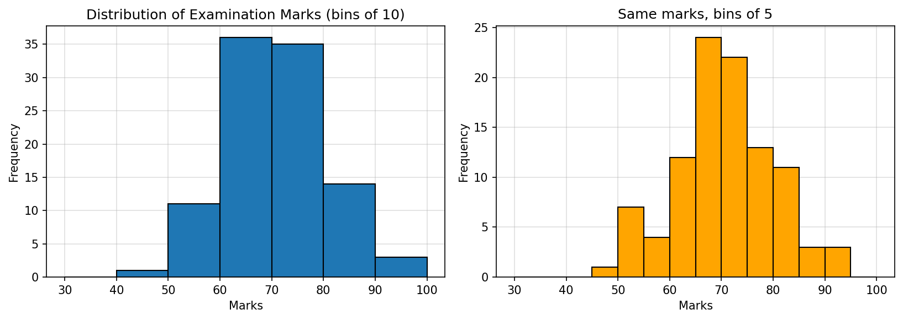
How the script works, step by step:
- 100 marks are generated. The lowest is 48.7 and the highest 94.7.
- The script checks that no mark lies outside the bin edges 30 and 100. Values outside the edges are silently left out of a histogram, so this check matters.
- The left histogram uses the custom bins. The printed counts show that most students (36 + 35 = 71) scored between 60 and 80, and all 100 marks were counted.
- The right histogram uses bins 5 marks wide on the same data.
- Titles, labels and grids are added and the figure is shown.
How bins affect the distribution:
| Bin width | What you see | Advantage | Drawback |
|---|---|---|---|
| Wide (10 marks) | A few tall bars and a clear, simple bell shape | Easy to read; each bin holds enough students to be meaningful | Hides detail inside each bin |
| Narrow (5 marks) | More, shorter bars (the tallest holds 24 students) | Shows more detail | Can look ragged, because each bin holds few students and chance ups and downs stand out |
The data is the same in both. Only the picture changes, so the choice of bins should always be stated and chosen with care.
Follow-up question: In the left histogram, the 30–40 bin is empty. Should it be removed from custom_bins?
Show answer
It could be removed by starting the edges at 40, and the counts of the other bins would not change. Keeping it is also acceptable if 30–40 is a meaningful grade band that you want to show as empty. What matters is that every mark falls inside the first and last edges, which the script checks.14. Create a scatter plot to study the relationship between study hours and examination marks. Identify possible trends and outliers.¶
Answer
A scatter plot draws one dot per student, with study hours along the x-axis and marks along the y-axis. The pattern of the dots shows the trend: if they rise from left to right, more study goes with higher marks, which is a positive correlation. An outlier is a dot that lies far from the trend.
In the original data all ten points lie almost on a straight line, so there is nothing to find. The script therefore adds two students who do not fit the pattern. It then fits a trend line with np.polyfit(), measures the correlation coefficient with np.corrcoef(), and marks any student more than 20 marks away from the trend line as a possible outlier. See numpy.polyfit, numpy.corrcoef and Outlier (Wikipedia).
# ==========================================================
# SCATTER PLOT ANALYSIS
# ==========================================================
#
# Objective:
# Explore relationship between
# study hours and marks.
#
# Concepts Covered:
# 1. Scatter plot
# 2. Correlation
# 3. Trend analysis
# 4. Outlier detection
#
# ==========================================================
# Step 1: Import libraries
import matplotlib.pyplot as plt
import numpy as np
# Step 2: Create data
# The first ten students follow the usual pattern.
# Two more students have been added who do NOT fit the pattern:
# one studied 2 hours but scored 85, one studied 9 hours but scored 45.
study_hours = np.array([
1,2,3,4,5,
6,7,8,9,10,
2,9
])
marks = np.array([
35,40,50,58,62,
70,74,82,88,95,
85,45
])
# Step 3: Measure the trend
# np.polyfit(x, y, 1) finds the straight line y = slope * x + intercept
# that fits the first ten points best.
slope, intercept = np.polyfit(study_hours[:10], marks[:10], 1)
print(f"Trend line (first 10 students): marks = {slope:.2f} * hours + {intercept:.2f}")
# Correlation: +1 = perfect rising line, 0 = no straight-line relationship
r_without = np.corrcoef(study_hours[:10], marks[:10])[0, 1]
r_with = np.corrcoef(study_hours, marks)[0, 1]
print(f"Correlation without the 2 unusual students: {r_without:.2f}")
print(f"Correlation with the 2 unusual students : {r_with:.2f}")
# Step 4: Find outliers: points far from the trend line
predicted = slope * study_hours + intercept
distance = marks - predicted
is_outlier = np.abs(distance) > 20 # More than 20 marks away from the line
for h, m, d in zip(study_hours[is_outlier], marks[is_outlier], distance[is_outlier]):
print(f"Outlier: {h} hours, {m} marks ({d:+.0f} marks from the trend line)")
# Step 5: Create scatter plot
plt.scatter(
study_hours[~is_outlier], # '~' means NOT: the normal points
marks[~is_outlier],
s=100,
label="Students"
)
plt.scatter(
study_hours[is_outlier],
marks[is_outlier],
s=100,
color="red",
label="Possible outliers"
)
# Draw the trend line across the whole range of hours
line_x = np.array([1, 10])
plt.plot(line_x, slope * line_x + intercept, linestyle="--", color="gray", label="Trend line")
# Step 6: Add chart elements
plt.title("Study Hours vs Marks")
plt.xlabel("Study Hours")
plt.ylabel("Marks Obtained")
plt.legend()
plt.grid(True)
# Step 7: Display graph
plt.show()
# --------------------------------------------------
# ANALYSIS
# --------------------------------------------------
#
# Positive Correlation:
# More study hours generally
# go with higher marks.
#
# Outliers:
# Any point far from the
# general trend line may
# indicate unusual behaviour.
#
# Scatter plots are excellent
# for detecting relationships.
#
# --------------------------------------------------
Output
Trend line (first 10 students): marks = 6.62 * hours + 29.00
Correlation without the 2 unusual students: 1.00
Correlation with the 2 unusual students : 0.59
Outlier: 2 hours, 85 marks (+43 marks from the trend line)
Outlier: 9 hours, 45 marks (-44 marks from the trend line)
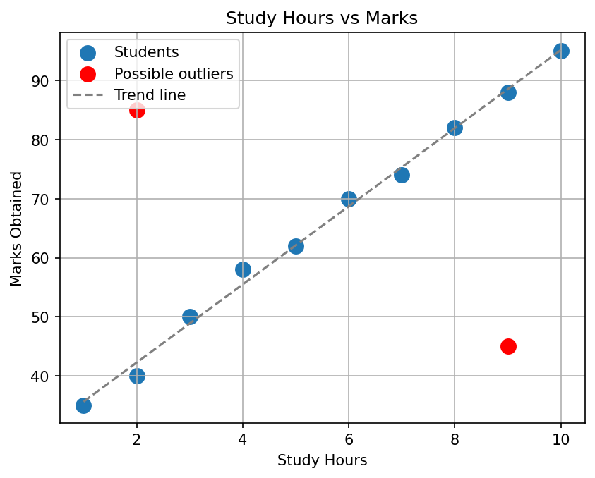
How the script works, step by step:
- The data is stored in NumPy arrays so that it can be selected and calculated with easily.
np.polyfit(..., 1)fits a straight line to the first ten students: each extra hour of study goes with about 6.6 more marks.- The correlation is almost perfect (1.00, when rounded) for the first ten students, and falls to 0.59 when the two unusual students are included. This shows how strongly a few outliers can affect a summary number.
- For each student, the script finds how far the actual mark is from the trend line. The two students more than 20 marks away are reported: one scored 43 marks above the line and one 44 marks below it.
is_outlieris a True/False array.marks[~is_outlier]selects the normal points andmarks[is_outlier]the outliers, so they can be drawn in different colors.- The dashed trend line, legend, labels and grid are added, and the graph is shown.
Trend and outliers found:
| Finding | Evidence |
|---|---|
| Positive trend | Dots rise from left to right; trend line slope about +6.6 marks per hour |
| Outlier 1 | 2 hours but 85 marks; far above the line (perhaps prior knowledge, or a data entry error) |
| Outlier 2 | 9 hours but 45 marks; far below the line (perhaps illness on the exam day) |
A caution: a scatter plot shows that study hours and marks move together; it does not by itself prove that studying causes higher marks. Also, an outlier should be investigated, not simply deleted.
Follow-up question: Why was the trend line fitted to the first ten students only, and not to all twelve?
Show answer
Outliers pull a fitted line toward themselves. If the two unusual students were included, the line would be flatter and would no longer describe the typical student well, which would make the outliers harder to spot. In real work, you would try both and report what the outliers do to the result.15. Create both a Box Plot and a Violin Plot for the same salary dataset. Compare the information provided by each visualization.¶
Answer
Both plots describe the distribution of the salaries, that is, how the values are spread. A box plot gives a compact summary: the box runs from the first quartile (Q1) to the third quartile (Q3), with a line at the median. Its whiskers reach the furthest values within 1.5 × IQR of the box (the IQR, or interquartile range, is Q3 minus Q1), and any values beyond that are drawn as outlier dots. A violin plot draws a smooth, mirrored density curve that shows where values are crowded and where they are sparse. In Matplotlib the median and quartile lines of a violin plot appear only when you ask for them. See Box plot (Wikipedia) and Violin plot (Wikipedia).
# ==========================================================
# BOX PLOT VS VIOLIN PLOT
# ==========================================================
#
# Objective:
# Compare two distribution plots.
#
# Concepts Covered:
# 1. Box plot
# 2. Violin plot
# 3. Median
# 4. Quartiles
# 5. Distribution shape
#
# ==========================================================
# Step 1: Import libraries
import matplotlib.pyplot as plt
import numpy as np
# Step 2: Create salary dataset
salary = np.array([
25000,28000,30000,32000,
35000,37000,40000,42000,
45000,48000,50000,55000,
60000,65000,70000
])
# Step 3: Calculate the numbers a box plot is built from
q1, median, q3 = np.percentile(salary, [25, 50, 75])
iqr = q3 - q1
lower_limit = q1 - 1.5 * iqr
upper_limit = q3 + 1.5 * iqr
outliers = salary[(salary < lower_limit) | (salary > upper_limit)]
print(f"Q1 = {q1:.0f}, median = {median:.0f}, Q3 = {q3:.0f}, IQR = {iqr:.0f}")
print(f"Outlier limits (1.5 x IQR rule): {lower_limit:.0f} to {upper_limit:.0f}")
print("Outliers:", outliers.tolist())
print(f"Mean = {salary.mean():.0f} (higher than the median, so the data leans to the right)")
# Step 4: Create figure with subplots
fig, ax = plt.subplots(
1,
2,
figsize=(12,5)
)
# --------------------------------------------------
# BOX PLOT
# --------------------------------------------------
ax[0].boxplot(salary)
ax[0].set_title("Box Plot")
ax[0].set_xticks([1], labels=["All 15 salaries"])
ax[0].set_ylabel("Salary")
ax[0].grid(True)
# --------------------------------------------------
# VIOLIN PLOT
# --------------------------------------------------
# By default violinplot() draws only the shape and the minimum and maximum.
# showmedians=True adds the median, and quantiles adds the Q1 and Q3 lines.
parts = ax[1].violinplot(
salary,
showmedians=True,
quantiles=[0.25, 0.75]
)
parts["cmedians"].set_color("red")
ax[1].set_title("Violin Plot")
ax[1].set_xticks([1], labels=["All 15 salaries"])
ax[1].set_ylabel("Salary")
ax[1].grid(True)
# --------------------------------------------------
# Display figure
# --------------------------------------------------
plt.tight_layout()
plt.show()
# --------------------------------------------------
# COMPARISON
# --------------------------------------------------
#
# BOX PLOT
# --------
# Shows:
# - Lower whisker end (the minimum, when there are no outliers)
# - Q1
# - Median
# - Q3
# - Upper whisker end (the maximum, when there are no outliers)
# - Outliers, as separate dots
#
# Excellent summary statistics.
#
# VIOLIN PLOT
# -----------
# Shows:
# - Distribution shape
# - Density estimation
# - Spread of data
# - Median and quartiles, when switched on
#
# Useful when understanding
# the shape of the distribution
# is important.
#
# --------------------------------------------------
Output
Q1 = 33500, median = 42000, Q3 = 52500, IQR = 19000
Outlier limits (1.5 x IQR rule): 5000 to 81000
Outliers: []
Mean = 44133 (higher than the median, so the data leans to the right)
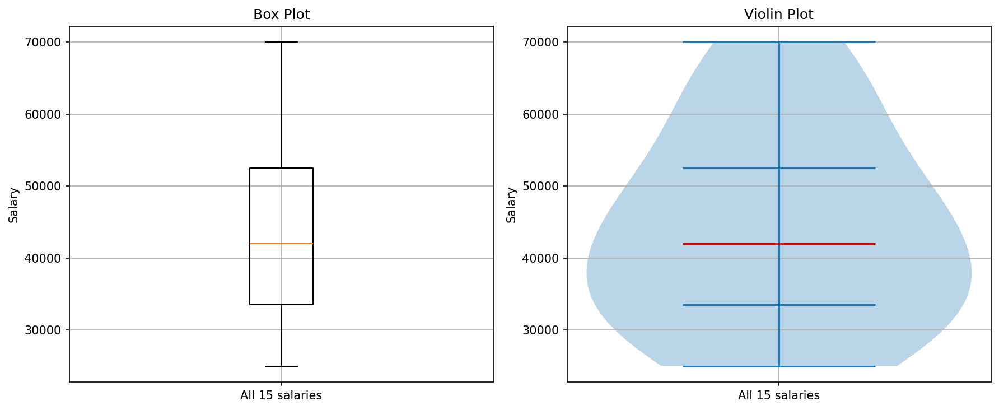
How the script works, step by step:
- The script calculates Q1 (33,500), the median (42,000), Q3 (52,500) and the IQR (19,000).
- The outlier limits are 5,000 and 81,000. Every salary lies inside them, so the box plot shows no outlier dots, and its whiskers reach the actual minimum (25,000) and maximum (70,000).
- The mean (44,133) is higher than the median. A few high salaries pull the mean up, so the data leans toward higher values (it is right-skewed).
ax[0].boxplot()draws the box plot.ax[1].violinplot(..., showmedians=True, quantiles=[0.25, 0.75])draws the violin with lines at the median (red) and at Q1 and Q3. Without these options, it would show only the shape and the minimum and maximum lines.- Both plots use the same salary scale, so the median and quartile lines sit at the same heights.
Comparing the two plots:
| Information | Box plot | Violin plot |
|---|---|---|
| Median | Yes | Yes, with showmedians=True |
| Q1 and Q3 | Yes (edges of the box) | Yes, with quantiles=[0.25, 0.75] |
| Minimum and maximum | Whisker ends, when there are no outliers | Yes, by default |
| Outliers as separate dots | Yes | No |
| Shape of the distribution | No | Yes: the violin is widest around 35,000 to 40,000, where most salaries lie, and thinner toward 70,000 |
| Best for | A quick, compact summary | Seeing where values bunch together |
Follow-up question: Add a salary of 150,000 to the data. How would each plot change?
Show answer
Step 1 - The new value lies far above the upper outlier limit, so the box plot would draw it as a separate dot above the whisker. The box itself would change only a little. Step 2 - The violin plot would stretch up to 150,000 with a long, very thin tail, because its maximum line always reaches the largest value. It would not mark the salary as an outlier.Comparative Table: Distribution Visualizations¶
| Feature | Histogram | Box Plot | Violin Plot |
|---|---|---|---|
| Shows Frequency (counts) | Yes | No | No (width shows density, not counts) |
| Shows Median | No | Yes | Only when switched on (showmedians=True) |
| Shows Quartiles | No | Yes | Only when switched on (quantiles=[0.25, 0.75]) |
| Shows Distribution Shape | Yes | Limited | Yes, as a smooth curve |
| Shows Outliers | Difficult | Yes | No; they appear only as thin tails |
| Shows More Than One Peak | Yes | No | Yes |
| Suitable for Large Data | Yes | Yes | Yes |
Part 6: Grid Data and Scientific Plots¶
16. Create a heat map using imshow() to visualize the marks obtained by students in five subjects. Add a color bar, title, and axis labels.¶
Answer
A heat map shows a table of numbers as a grid of colored squares. Here the table is a matrix (a 2-D NumPy array): each row is a student and each column a subject. plt.imshow() gives each cell a color from a colormap, and the color bar is the key that shows which color stands for which mark. See matplotlib.pyplot.imshow and Choosing colormaps (Matplotlib).
# ==========================================================
# MATRIX VISUALIZATION USING imshow()
# ==========================================================
#
# Objective:
# Visualize matrix data using a heat map.
#
# Concepts Covered:
# 1. Matrix data
# 2. imshow()
# 3. Color mapping
# 4. Color bar
# 5. Axis labels
#
# ==========================================================
# Step 1: Import libraries
import matplotlib.pyplot as plt
import numpy as np
# Step 2: Create matrix data
#
# Rows -> Students
# Columns -> Subjects
marks = np.array([
[78, 82, 85, 80, 76],
[88, 91, 79, 85, 90],
[65, 72, 70, 68, 75],
[92, 89, 94, 96, 91],
[81, 83, 80, 79, 84]
])
subjects = [
"Math",
"Physics",
"Chemistry",
"English",
"CS"
]
students = [
"S1",
"S2",
"S3",
"S4",
"S5"
]
# Summaries that the heat map should make visible
print("Shape of the matrix (students, subjects):", marks.shape)
print("Average per student:", dict(zip(students, marks.mean(axis=1).round(1).tolist())))
print("Average per subject:", dict(zip(subjects, marks.mean(axis=0).round(1).tolist())))
row, col = np.unravel_index(marks.argmax(), marks.shape)
print("Highest mark:", marks.max(), "by", students[row], "in", subjects[col])
# Step 3: Create figure
plt.figure(figsize=(8,6))
# Step 4: Display matrix
image = plt.imshow(
marks,
cmap="viridis", # Dark purple for low marks, yellow for high marks
aspect="auto" # Let the cells stretch to fill the figure
)
# Step 5: Add color bar
plt.colorbar(
image,
label="Marks"
)
# Step 6: Label axes
# Replace the position numbers 0 to 4 with subject and student names
plt.xticks(
range(len(subjects)),
subjects
)
plt.yticks(
range(len(students)),
students
)
# Write the mark inside each cell (white on dark cells, black on light cells)
for r in range(marks.shape[0]):
for c in range(marks.shape[1]):
text_color = "black" if marks[r, c] >= 85 else "white"
plt.text(c, r, marks[r, c], ha="center", va="center", color=text_color)
# Step 7: Add title
plt.title("Student Marks Heat Map")
plt.xlabel("Subjects")
plt.ylabel("Students")
# Step 8: Show graph
plt.show()
Output
Shape of the matrix (students, subjects): (5, 5)
Average per student: {'S1': 80.2, 'S2': 86.6, 'S3': 70.0, 'S4': 92.4, 'S5': 81.4}
Average per subject: {'Math': 80.8, 'Physics': 83.4, 'Chemistry': 81.6, 'English': 81.6, 'CS': 83.2}
Highest mark: 96 by S4 in English
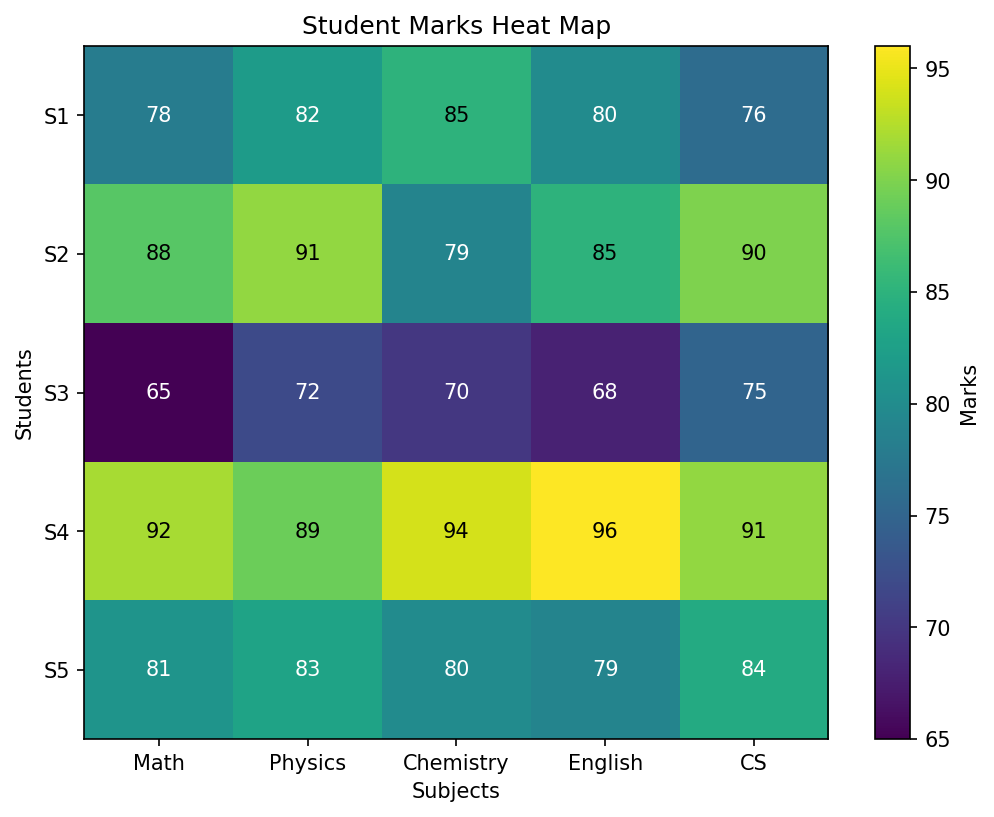
How the script works, step by step:
- The 5 × 5 matrix stores the marks, with students as rows and subjects as columns.
marks.mean(axis=1)averages across each row (per student), andmarks.mean(axis=0)averages down each column (per subject).argmax()andunravel_index()find the row and column of the highest mark.plt.imshow()draws the grid with the "viridis" colormap.aspect="auto"lets the cells stretch to fill the figure.plt.colorbar()adds the key, labelled "Marks".plt.xticks()andplt.yticks()replace the position numbers 0 to 4 with subject and student names.- The loop writes each mark in its cell, in black on light cells and white on dark cells.
- The title and axis labels are added and the heat map is shown.
Reading the heat map: row S4 is the brightest, so S4 is the strongest student (average 92.4, with the top mark of 96 in English). Row S3 is the darkest (average 70.0). The subject averages are close together, from 80.8 in Math to 83.4 in Physics, so no subject stands out as much harder than the others.
Follow-up question: Why does the script write the marks inside the cells when the color bar already shows the values?
Show answer
Colors are good for spotting patterns, but it is hard to read an exact number from a shade. Writing the marks in the cells gives both: the pattern at a glance and the exact value when needed. For a large matrix with hundreds of cells, the numbers would be too crowded and are usually left out.17. Create contour and contourf plots of a mathematical surface defined by z = sin(x² + y²). Compare the two visualizations.¶
Answer
A surface gives a height z for every point (x, y). To draw it, we need z values on a grid of points. np.meshgrid() builds that grid from two 1-D ranges. contour() then draws contour lines joining points of equal z, like height lines on a map, and contourf() fills the bands between levels with color. See numpy.meshgrid, matplotlib.pyplot.contour and matplotlib.pyplot.contourf.
Since x² + y² is the squared distance from the centre, every point at the same distance from (0, 0) has the same z. That is why both plots show rings. The rings get closer together further out, because x² + y² grows faster and faster, so the sine wave goes up and down more quickly.
flowchart TD
A[Step 1 - Make 200 x-values and 200 y-values] --> B[Step 2 - Build a 200 by 200 grid with meshgrid]
B --> C[Step 3 - Calculate z at every grid point]
C --> D[Step 4a - contour draws lines of equal z]
C --> E[Step 4b - contourf fills bands between levels]
D --> F[Step 5 - Add labels, color bar and show]
E --> F
# ==========================================================
# CONTOUR AND CONTOURF VISUALIZATION
# ==========================================================
#
# Objective:
# Visualize a mathematical surface.
#
# Concepts Covered:
# 1. Meshgrid
# 2. Contour lines
# 3. Filled contours
# 4. Matrix-based visualization
#
# ==========================================================
# Step 1: Import libraries
import matplotlib.pyplot as plt
import numpy as np
# Step 2: Create X and Y values
# 200 evenly spaced numbers from -3 to 3 for each direction
x = np.linspace(-3, 3, 200)
y = np.linspace(-3, 3, 200)
# Step 3: Create mesh grid
# X holds the x-value and Y the y-value of every point on a 200 x 200 grid
X, Y = np.meshgrid(x, y)
# Step 4: Compute Z values
# Z depends only on x² + y², which is the squared distance from the centre (0, 0).
# So points at the same distance from the centre have the same Z: the contours are circles.
Z = np.sin(X**2 + Y**2)
print("Shape of X, Y and Z:", X.shape, Y.shape, Z.shape)
print(f"Smallest Z = {Z.min():.2f}, largest Z = {Z.max():.2f}")
print("Z at the centre (0, 0) is sin(0) =", np.sin(0.0))
# Step 5: Create figure
fig, ax = plt.subplots(
1,
2,
figsize=(12,5)
)
# --------------------------------------------------
# CONTOUR PLOT
# --------------------------------------------------
# levels chooses which values get a line. With the default 9 levels the rings
# far from the centre crowd together, so only three levels are drawn here.
contour_lines = ax[0].contour(
X,
Y,
Z,
levels=[-0.5, 0, 0.5]
)
ax[0].clabel(contour_lines, fontsize=7) # Write the value on each line
ax[0].set_title("Contour Plot")
# --------------------------------------------------
# CONTOURF PLOT
# --------------------------------------------------
filled = ax[1].contourf(
X,
Y,
Z
)
fig.colorbar(
filled,
ax=ax[1],
label="z = sin(x² + y²)"
)
ax[1].set_title("Contourf Plot")
print("Contour line levels :", contour_lines.levels.tolist())
print("Filled band edges :", filled.levels.tolist())
# Axis labels and equal scaling, so the circles look like circles
for a in ax:
a.set_xlabel("x")
a.set_ylabel("y")
a.set_aspect("equal")
# Step 6: Improve layout
plt.tight_layout()
# Step 7: Display graph
plt.show()
# --------------------------------------------------
# COMPARISON
# --------------------------------------------------
#
# contour()
# ----------
# Draws contour lines.
# Similar to topographic maps.
#
# contourf()
# ----------
# Fills regions between contours.
# Easier to identify value ranges.
#
# --------------------------------------------------
Output
Shape of X, Y and Z: (200, 200) (200, 200) (200, 200)
Smallest Z = -1.00, largest Z = 1.00
Z at the centre (0, 0) is sin(0) = 0.0
Contour line levels : [-0.5, 0.0, 0.5]
Filled band edges : [-1.0, -0.75, -0.5, -0.25, 0.0, 0.25, 0.5, 0.75, 1.0]
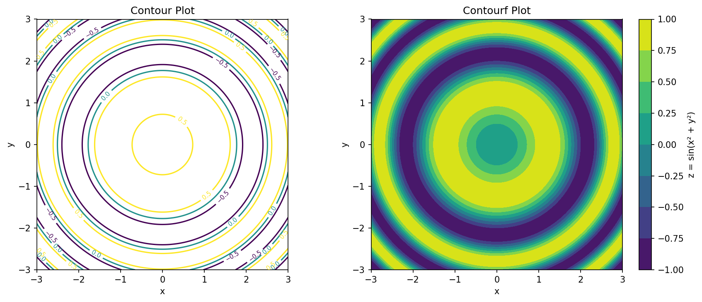
How the script works, step by step:
np.linspace(-3, 3, 200)makes 200 evenly spaced values for x, and the same for y.np.meshgrid()turns them into two 200 × 200 grids,XandY, holding the coordinates of every point.Z = np.sin(X**2 + Y**2)calculates the height at all 40,000 points at once. Z goes from -1 to 1, and is 0 at the centre.ax[0].contour()draws lines at three levels, -0.5, 0 and 0.5, andclabel()writes the value on each line. The default of nine levels would pack the outer rings so tightly that they would be hard to read.ax[1].contourf()fills eight bands between the nine default levels from -1 to 1, andfig.colorbar()shows which color is which band.set_aspect("equal")keeps one unit of x the same length as one unit of y, so the rings look like circles.
Comparing the two:
| Feature | contour() |
contourf() |
|---|---|---|
| What is drawn | Lines of equal value | Filled color bands between values |
| Similar to | Height lines on a topographic map | A colored weather map |
| Reading exact levels | Easy, with clabel() labels on the lines |
Use the color bar |
| Seeing regions of high and low values | Harder; the space between lines is empty | Easy; each band has its own color |
| Key | Line labels | Color bar |
Follow-up question: What would the contour plot look like for z = x² + y² (without the sine)?
Show answer
Still circles centred on (0, 0), because z again depends only on the distance from the centre. But z would rise steadily outward instead of going up and down, so there would be one smooth "bowl" with the lowest value at the centre, and no repeated bands.Part 7: Annotations, Styles and Saving¶
18. Create a graph of monthly sales and use text annotations to highlight the highest and lowest sales values.¶
Answer
plt.annotate() adds a label that can point at a particular data point with an arrow. It takes xy, the point to point at, and xytext, where to put the text. With textcoords="offset points", xytext is measured in points from the data point, which keeps the labels at a steady distance even if the axis limits change. plt.text() adds plain text at a position without an arrow. See matplotlib.pyplot.annotate and matplotlib.pyplot.text.
The highest and lowest values are found with max(), min() and index(), so the labels move to the right months automatically if the data changes.
# ==========================================================
# TEXT ANNOTATIONS
# ==========================================================
#
# Objective:
# Highlight important points on a graph.
#
# Concepts Covered:
# 1. annotate()
# 2. text()
# 3. Data storytelling
#
# ==========================================================
# Step 1: Import pyplot
import matplotlib.pyplot as plt
# Step 2: Create data
months = [
"Jan","Feb","Mar",
"Apr","May","Jun"
]
sales = [
120,150,100,
180,210,170
]
# Step 3: Plot graph
plt.plot(
months,
sales,
marker='o'
)
# Step 4: Find highest and lowest points
highest_value = max(sales)
lowest_value = min(sales)
highest_index = sales.index(highest_value)
lowest_index = sales.index(lowest_value)
print("Highest sales:", highest_value, "in", months[highest_index])
print("Lowest sales :", lowest_value, "in", months[lowest_index])
# Step 5: Annotate highest value
# xy is the point the arrow points to.
# xytext is where the text goes. With textcoords="offset points" it is measured
# in points from the data point, so (0, -40) means 40 points BELOW the peak.
plt.annotate(
f"Highest Sales ({highest_value})",
xy=(
months[highest_index],
highest_value
),
xytext=(0, -40),
textcoords="offset points",
ha="center",
arrowprops={
"arrowstyle":"->"
}
)
# Step 6: Annotate lowest value
# Here the text is placed 40 points ABOVE the lowest point.
plt.annotate(
f"Lowest Sales ({lowest_value})",
xy=(
months[lowest_index],
lowest_value
),
xytext=(0, 40),
textcoords="offset points",
ha="center",
arrowprops={
"arrowstyle":"->"
}
)
# Step 7: Add a plain text note with plt.text() at a data position
plt.text("Jan", 200, "Total: " + str(sum(sales)), fontsize=10)
# Step 8: Add chart elements
plt.title("Monthly Sales Analysis")
plt.xlabel("Month")
plt.ylabel("Sales")
plt.grid(True)
# Step 9: Show graph
plt.show()
Output
Highest sales: 210 in May
Lowest sales : 100 in Mar
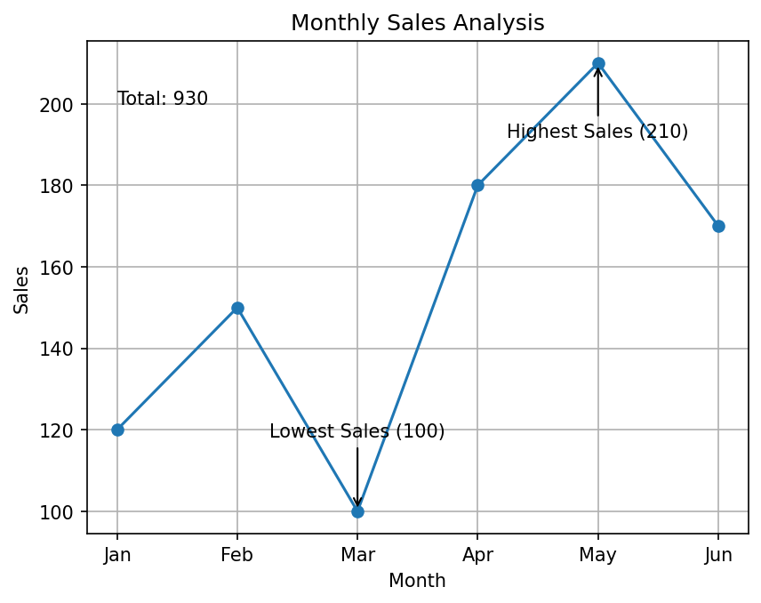
How the script works, step by step:
- The sales line is drawn with markers.
max(sales)gives 210 andsales.index(210)gives position 4, which is May. In the same way, the lowest value is 100 in March.- The first annotation points at (May, 210). Its text is placed 40 points below the peak, so it stays inside the plot instead of running into the title.
- The second annotation points at (March, 100), with its text 40 points above the point.
plt.text("Jan", 200, ...)writes the total sales at a fixed data position, with no arrow.- The title, labels and grid are added and the graph is shown.
Why use offsets in points? If the text were placed at a data position such as highest_value + 25 (235), it would lie above the top of the plot, which ends at about 215, and could overlap the title. An offset in points always keeps the label close to its point.
Follow-up question: How would you also label the value of every point, not just the highest and lowest?
Show answer
Loop over the data and add a small text above each marker:for month, value in zip(months, sales):
plt.annotate(str(value), xy=(month, value), xytext=(0, 8),
textcoords="offset points", ha="center")
19. Create the same graph using the ggplot style and the dark_background style. Compare the results.¶
Answer
A style sheet is a ready-made set of appearance settings: background color, grid, fonts and line colors. Matplotlib includes many, such as "ggplot" and "dark_background". plt.style.use("ggplot") switches the style for the rest of the session, so every later figure changes too. That is why the script uses with plt.style.context("ggplot"):, which applies the style only to the figure made inside the block and then restores the normal settings. See Style sheets reference (Matplotlib) and Customizing Matplotlib.
# ==========================================================
# MATPLOTLIB STYLES
# ==========================================================
#
# Objective:
# Demonstrate style sheets.
#
# Concepts Covered:
# 1. ggplot style
# 2. dark_background style
# 3. Visual themes
# 4. Applying a style to one figure only
#
# ==========================================================
# Step 1: Import library
import matplotlib.pyplot as plt
# Step 2: Create data
months = [
"Jan","Feb","Mar",
"Apr","May","Jun"
]
sales = [
120,150,180,
170,220,250
]
public_styles = [name for name in sorted(plt.style.available) if not name.startswith("_")]
print("Some available styles:", public_styles[:6])
# --------------------------------------------------
# GRAPH 1 : GGPLOT STYLE
# --------------------------------------------------
# 'with plt.style.context(...)' applies the style only inside the block.
# Using plt.style.use() instead would change every later figure as well.
with plt.style.context("ggplot"):
plt.figure(figsize=(8,4))
plt.plot(
months,
sales,
marker='o'
)
plt.title("Sales Trend - ggplot Style")
plt.xlabel("Month")
plt.ylabel("Sales")
print("ggplot background color :", [round(c, 2) for c in plt.gca().get_facecolor()[:3]])
plt.show()
# --------------------------------------------------
# GRAPH 2 : DARK BACKGROUND
# --------------------------------------------------
with plt.style.context("dark_background"):
plt.figure(figsize=(8,4))
plt.plot(
months,
sales,
marker='o'
)
plt.title("Sales Trend - Dark Background")
plt.xlabel("Month")
plt.ylabel("Sales")
print("dark_background background color:", [round(c, 2) for c in plt.gca().get_facecolor()[:3]])
plt.show()
# After the blocks, new figures use the normal default style again
fig, ax = plt.subplots()
print("Default background color again :", [round(c, 2) for c in ax.get_facecolor()[:3]])
plt.close(fig)
# --------------------------------------------------
# COMPARISON
# --------------------------------------------------
#
# ggplot
# ------
# Inspired by R's ggplot2
# Professional appearance
#
# dark_background
# ---------------
# Dark theme
# Suitable for presentations
#
# --------------------------------------------------
Output
Some available styles: ['Solarize_Light2', 'bmh', 'classic', 'dark_background', 'fast', 'fivethirtyeight']
ggplot background color : [0.9, 0.9, 0.9]
dark_background background color: [0.0, 0.0, 0.0]
Default background color again : [1.0, 1.0, 1.0]
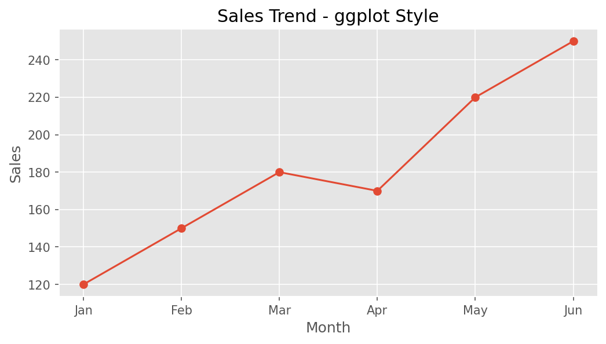
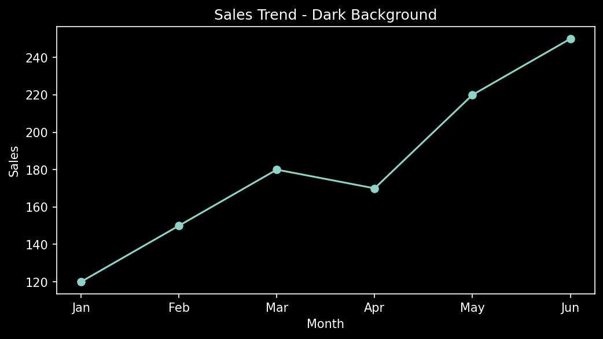
How the script works, step by step:
plt.style.availablelists the installed styles. Names starting with an underscore are for Matplotlib's internal use, so they are filtered out.- Inside the first
withblock, the figure is drawn in the ggplot style. Its background color is printed: light gray (0.9, 0.9, 0.9). - Inside the second
withblock, the same graph is drawn in the dark_background style. Its background is black (0, 0, 0). - After the blocks, a new figure has the normal white background (1, 1, 1). This confirms that neither style leaked into later figures.
Comparing the two styles:
| Feature | ggplot | dark_background |
|---|---|---|
| Inspired by | The ggplot2 package for the R language | Dark screen themes |
| Background | Light gray plot area | Black |
| Grid | White gridlines | None by default |
| Text and axes | Dark gray | White |
| Line color | Red-orange | Light teal |
| Good for | Reports and printed documents | Slides and screens in dark rooms |
| Printing | Prints well | Uses a lot of ink; usually not suitable |
Follow-up question: The original version of this script used plt.style.use("dark_background"). If you then added a third graph at the end of the script, what style would it have?
Show answer
It would still have the dark_background style, because `plt.style.use()` changes the defaults for everything that follows. To go back, you would need `plt.style.use("default")`. Using `plt.style.context()` avoids this problem.20. Create a graph and save it in PNG, PDF, and SVG formats using savefig(). Verify that the file is saved before displaying the graph.¶
Answer
plt.savefig() writes the current figure to a file. The format is chosen from the file name ending: .png, .pdf or .svg. The files should be saved before plt.show(), because in many setups the figure is cleared when its window is closed. To verify that the files were saved, the script uses os.path.exists() to check that each file is there and os.path.getsize() to check that it is not empty. See matplotlib.pyplot.savefig and os.path (Python documentation).
| Format | Kind of image | Best for |
|---|---|---|
| PNG | Made of pixels (tiny dots); dpi sets how sharp it is |
Web pages, slides, documents |
| Vector: drawn with shapes, sharp at any size | Printing and reports | |
| SVG | Vector | Web pages, and editing in drawing programs |
flowchart TD
A[Step 1 - Create the graph and add labels] --> B[Step 2 - Save as PNG, PDF and SVG]
B --> C[Step 3 - Check each file exists and is not empty]
C --> D{Step 4 - All files saved}
D -->|Yes| E[Step 5 - Print a success message]
D -->|No| F[Step 6 - Print a warning]
E --> G[Step 7 - Show the graph]
F --> G
# ==========================================================
# SAVING GRAPHS USING savefig()
# ==========================================================
#
# Objective:
# Save graphs in multiple formats.
#
# Concepts Covered:
# 1. savefig()
# 2. PNG format
# 3. PDF format
# 4. SVG format
# 5. Checking that the files exist
#
# ==========================================================
# Step 1: Import libraries
import os
import matplotlib.pyplot as plt
# Step 2: Create data
years = [
2020,
2021,
2022,
2023,
2024
]
revenue = [
120,
150,
180,
220,
260
]
# Step 3: Create graph
plt.plot(
years,
revenue,
marker='o'
)
# Step 4: Add chart elements
plt.title("Company Revenue Growth")
plt.xlabel("Year")
plt.ylabel("Revenue")
plt.xticks(years) # Whole years only, not 2020.5 and so on
plt.grid(True)
# --------------------------------------------------
# Step 5:
# Save BEFORE show()
# --------------------------------------------------
file_names = [
"revenue_chart.png",
"revenue_chart.pdf",
"revenue_chart.svg"
]
for file_name in file_names:
plt.savefig(
file_name,
dpi=300 # Affects PNG sharpness; PDF and SVG are drawn with shapes
)
# --------------------------------------------------
# Step 6: Verify that each file really exists
# --------------------------------------------------
# os.path.exists() -> True if the file is there
# os.path.getsize() -> size of the file in bytes (more than 0 means it has content)
for file_name in file_names:
exists = os.path.exists(file_name)
has_content = exists and os.path.getsize(file_name) > 0
print(f"{file_name:<18} exists: {exists}, has content: {has_content}")
if all(os.path.exists(name) for name in file_names):
print("Files saved successfully.")
else:
print("Some files were not saved.")
# Step 7: Display graph
plt.show()
# --------------------------------------------------
# WHY SAVE BEFORE show()?
# --------------------------------------------------
#
# Some environments may clear
# or close the figure after
# displaying it.
#
# Saving first ensures that
# the graph is safely written
# to disk.
#
# --------------------------------------------------
Output
revenue_chart.png exists: True, has content: True
revenue_chart.pdf exists: True, has content: True
revenue_chart.svg exists: True, has content: True
Files saved successfully.
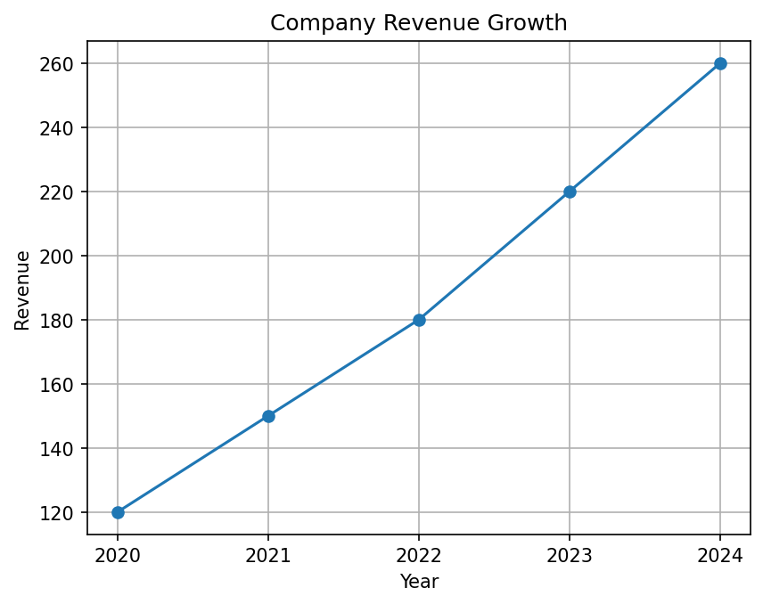
How the script works, step by step:
- The revenue line is drawn, with a title, labels, whole-year ticks and a grid.
- The loop saves the same figure three times, once in each format.
dpi=300makes the PNG sharp; it has little effect on the PDF and SVG, which are drawn with shapes. - A second loop checks each file with
os.path.exists()andos.path.getsize()and prints the result. all(...)is True only if every file exists, so the success message appears only when all three were saved.plt.show()displays the graph last.
The files are saved in the folder from which the script is run. The original version printed "Files saved successfully." without checking; the checks here make that message trustworthy.
Follow-up question: How would you save the files into a folder called charts instead of the current folder?
Show answer
Create the folder if needed and join the folder name to each file name:os.makedirs("charts", exist_ok=True)
plt.savefig(os.path.join("charts", "revenue_chart.png"), dpi=300)
Comparative Table – Matrix and Scientific Visualizations¶
| Visualization | Works with | Main Purpose |
|---|---|---|
imshow() |
Matrix/Grid data | Heat maps, images |
contour() |
Matrix/Grid data | Equal-value lines |
contourf() |
Matrix/Grid data | Filled contour regions |
annotate() |
Any plot | Highlight important points |
| Styles | Any plot | Change visual appearance |
savefig() |
Any plot | Export graph to file |
Glossary of Technical Terms¶
| Term | Simple explanation | Learn more |
|---|---|---|
| Annotation | A text label, often with an arrow, pointing at a data point | Annotations |
| Axes | One plotting area inside a figure | Anatomy of a figure |
| Bin | One interval into which a histogram groups values | Histogram |
| Color bar | A strip showing which color stands for which value | matplotlib.pyplot.colorbar |
| Colormap | A smooth scale of colors used to show numbers | Choosing colormaps |
| Contour line | A line joining points of equal value | Contour line |
| Correlation coefficient | A number from -1 to +1 showing how closely two variables follow a straight line | Pearson correlation coefficient |
| Data label | A number written on or above a bar or point | matplotlib.pyplot.bar_label |
| Distribution | How the values of a variable are spread out | Frequency distribution |
| Figure | The whole window or page holding one or more plots | matplotlib.figure |
| Heat map | A grid of colored cells showing the size of values | Heat map |
| Interquartile range (IQR) | Q3 minus Q1; the spread of the middle half of the data | Interquartile range |
| Legend | The key that names each line, bar or color | Legend guide |
| Matrix | A rectangular arrangement of numbers in rows and columns | Matrix |
| Meshgrid | A pair of grids holding the x and y coordinates of every point | numpy.meshgrid |
| Object-oriented style | Plotting by calling methods on named fig and ax objects |
Matplotlib Application Interfaces |
| Outlier | A value unusually far from the rest | Outlier |
| pandas Series | A single labelled column of data | pandas Series |
| Quartile | A value that splits ordered data into quarters (Q1, median, Q3) | Quartile |
| Random seed | A starting number that makes random results repeatable | numpy.random.seed |
| Skewness | How lopsided a distribution is | Skewness |
| Style sheet | A ready-made set of appearance settings | Style sheets reference |
| Subplot | One of several plotting areas in a single figure | matplotlib.pyplot.subplots |
| Vector image | An image drawn with shapes that stays sharp at any size | Vector graphics |
| Vectorized operation | Maths applied to a whole array in one step | NumPy: the absolute basics |
| Violin plot | A plot combining a mirrored density curve with summary lines | Violin plot |